Content from Imaging Data: Structure And Formats
Last updated on 2024-07-23 | Edit this page
Estimated time: 32 minutes
Overview
Questions
- How is imaging data represented in a computer?
- What are some of the popular imaging formats used?
- How do I view and navigate around an image/
Objectives
- Describe the structure of imaging data
- Understand the coordinate systems and mapping between voxels and real world.
- Demonstrate how to view images, navigate through volumes and change contrast
Introduction
Any medical image consists of two parts: a header and the image itself. The header consists of metadata that describe the image. This includes the patient’s demographic information such as the patient’s name, age, gender, and date of birth. The header also gives information on the image characteristics such as image dimension and some acquisition parameters. Because of the need to store more information, medical images require specific formats (different from e.g. .jpeg or .png).
Image formats: DICOM and NIfTI
DICOM (.dcm) stands for Digital Imaging and Communications in Medicine. It is a standard, internationally accepted format to view, store, retrieve and share medical images. Clinical imaging data are typically stored and transferred in the DICOM format, so DICOM can be considered the native format in which we get imaging data from the scanner.
NIfTI (.nii, .nii.gz) format is simpler and easier to support, so has been widely adopted by scientists in the neuroimaging community. Therefore, a vital initial step in processing the data is to convert images from DICOM to NIfTI format. In this practical we will work with data that have already been converted to NIfTI, but many tools for such conversions are available (for example dcm2niix).
Viewing image properties - fslhd and fslinfo
These tools enable various properties of an image to be viewed.
Clicking on the Applications in the upper left-hand corner and select
the terminal icon. This will open a terminal window that you will use to
type commands 
From the terminal window type:
OUTPUT
sub-OAS30015_acq-TSE_T2w.json sub-OAS30015_T1w_brain_seg.nii.gz
sub-OAS30015_acq-TSE_T2w.nii.gz sub-OAS30015_T1w.json
sub-OAS30015_T1w_brain_mask.nii.gz sub-OAS30015_T1w.nii.gz
sub-OAS30015_T1w_brain_mixeltype.nii.gz sub-OAS30015_T1w_orig.nii.gz
sub-OAS30015_T1w_brain.nii.gz sub-OAS30015_T2star.json
sub-OAS30015_T1w_brain_pve_0.nii.gz sub-OAS30015_T2star.nii.gz
sub-OAS30015_T1w_brain_pve_1.nii.gz sub-OAS30015_T2w.json
sub-OAS30015_T1w_brain_pve_2.nii.gz sub-OAS30015_T2w.nii.gz
sub-OAS30015_T1w_brain_pveseg.nii.gzThis means that we are going to be working in the
ImageDataVisualization subfolder under data in
your home directory (~). The ls command gives
you a list of the files in this directory.
Type
OUTPUT
filename sub-OAS30015_T1w.nii.gz
sizeof_hdr 348
data_type INT16
dim0 3
dim1 176
dim2 256
dim3 170
dim4 1
dim5 1
dim6 1
dim7 1
vox_units mm
time_units s
datatype 4
nbyper 2
bitpix 16
pixdim0 1.000000
pixdim1 1.000003
pixdim2 1.000000
pixdim3 1.000000
pixdim4 2.400000
pixdim5 0.000000
pixdim6 0.000000
pixdim7 0.000000
vox_offset 352
cal_max 0.000000
cal_min 0.000000
scl_slope 1.000000
scl_inter 0.000000
phase_dim 0
freq_dim 0
slice_dim 0
slice_name Unknown
slice_code 0
slice_start 0
slice_end 0
slice_duration 0.000000
toffset 0.000000
intent Unknown
intent_code 0
intent_name
intent_p1 0.000000
intent_p2 0.000000
intent_p3 0.000000
qform_name Scanner Anat
qform_code 1
qto_xyz:1 0.999466 -0.000520 -0.032767 -73.860321
qto_xyz:2 -0.000059 0.999844 -0.017685 -88.219193
qto_xyz:3 0.032771 0.017677 0.999307 -94.454788
qto_xyz:4 0.000000 0.000000 0.000000 1.000000
qform_xorient Left-to-Right
qform_yorient Posterior-to-Anterior
qform_zorient Inferior-to-Superior
sform_name Scanner Anat
sform_code 1
sto_xyz:1 0.999466 -0.000520 -0.032767 -73.860321
sto_xyz:2 -0.000059 0.999844 -0.017685 -88.219193
sto_xyz:3 0.032771 0.017677 0.999307 -94.454788
sto_xyz:4 0.000000 0.000000 0.000000 1.000000
sform_xorient Left-to-Right
sform_yorient Posterior-to-Anterior
sform_zorient Inferior-to-Superior
file_type NIFTI-1+
file_code 1
descrip 6.0.5:9e026117
aux_file OAS30015_MR_d2004OUTPUT
filename sub-OAS30015_T1w_brain_pve_0.nii.gz
sizeof_hdr 348
data_type FLOAT32
dim0 3
dim1 176
dim2 256
dim3 170
dim4 1
dim5 1
dim6 1
dim7 1
vox_units mm
time_units s
datatype 16
nbyper 4
bitpix 32
pixdim0 1.000000
pixdim1 1.000003
pixdim2 1.000000
pixdim3 1.000000
pixdim4 2.400000
pixdim5 0.000000
pixdim6 0.000000
pixdim7 0.000000
vox_offset 352
cal_max 0.000000
cal_min 0.000000
scl_slope 1.000000
scl_inter 0.000000
phase_dim 0
freq_dim 0
slice_dim 0
slice_name Unknown
slice_code 0
slice_start 0
slice_end 0
slice_duration 0.000000
toffset 0.000000
intent Unknown
intent_code 0
intent_name
intent_p1 0.000000
intent_p2 0.000000
intent_p3 0.000000
qform_name Scanner Anat
qform_code 1
qto_xyz:1 0.999466 -0.000520 -0.032767 -73.860321
qto_xyz:2 -0.000059 0.999844 -0.017685 -88.219193
qto_xyz:3 0.032771 0.017677 0.999307 -94.454788
qto_xyz:4 0.000000 0.000000 0.000000 1.000000
qform_xorient Left-to-Right
qform_yorient Posterior-to-Anterior
qform_zorient Inferior-to-Superior
sform_name Scanner Anat
sform_code 1
sto_xyz:1 0.999466 -0.000520 -0.032767 -73.860321
sto_xyz:2 -0.000059 0.999844 -0.017685 -88.219193
sto_xyz:3 0.032771 0.017677 0.999307 -94.454788
sto_xyz:4 0.000000 0.000000 0.000000 1.000000
sform_xorient Left-to-Right
sform_yorient Posterior-to-Anterior
sform_zorient Inferior-to-Superior
file_type NIFTI-1+
file_code 1
descrip 6.0.5:9e026117
aux_file OAS30015_MR_d2004Let’s look at the most important fields:
-
Data type (
data_type): Note that some images (sub-OAS30015_T1w) are of integer datatype, while others (sub-OAS30015_T1w_brain_pve_0) are of floating point datatype. Integer means that the intensity values can only take on whole numbers - no fractions - raw image data is normally of this type. Floating point means that intensity values can be fractional - the result of applying most statistical processing algorithms to image data results in images of floating point type. -
Image dimension (
dim1,dim2,dim3): this is the number of voxels in the image in the x,y,z dimension. This means that we have a cube of imaging data in the file that containsdim1columns,dim2rows, anddim3slices. -
Image resolution (Voxel size)
(
pixdim1,pixdim2,pixdim3) : this tells us the size that each voxel represents (in mm) in the x,y,z dimension.
As an example to understand the difference between image
dimension and image resolution, an MRI of a fruit fly or an elephant
could contain 256 slices (same dim3 value), but one image
would have to represent a much larger size in the real world than the
other (different pixdim3).
If the voxel dimension is the same in all directions (e.g. 1x1x1 mm) we talk about isotropic voxels. Having images with isotropic (or with very similar voxel size in the 3 directions) is desirable to perform reliable quantitative analyses.
-
Affine transformation (
qform): this field encodes a transformation or mapping that tells us how to convert the voxel location (i,j,k) to the real-world coordinates (x,y,z) (i.e. the coordinate system of the MRI scanner in which the image was acquired). The real-world coordinate system tends to be defined according to the patient. The x-axis tends to go from patient left to patient right, the y axis tends to go from anterior to posterior, and the z-axis goes from top to bottom of the patient. This mapping is very important, as this information will be needed to correctly visualize images and also to align them later. 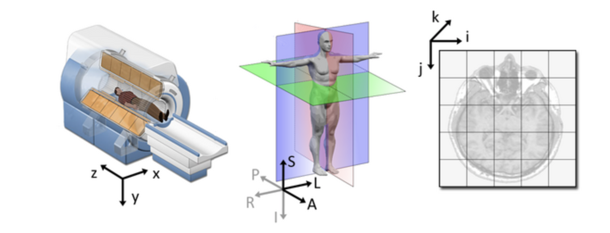 Figure from Slicer
An alternative command to fslinfo is fslhd,
which displays a reduced set of properties about the images (mainly data
type, dimension and resolution).
Neuroimaging data analysis
Generic blueprint of a neuroimaging study
The steps to conduct a neuroimaging study are very similar to any other scientific experiment. As we go through the workshop today, think about where a certain analysis or tool falls in this generic pipeline:
| Step | Aim | Challenges and considerations |
|---|---|---|
| 1. Data Acquisition | Obtain good quality and consistent data | Trade offs often necessary (e.g. time vs resolution). Optimize protocol for your research aim. We will use already acquired data from OASIS. |
| 2. Data preprocessing | Reduce noise and prepare data for further analysis | Some steps are common across modalities (e.g. brain extraction, registration), others are modality-specific (e.g. motion correction, distortion correction). Requires careful checking. |
| 3. Single-subject analysis | Obtain measure of interest for each subject (often an image) | Modality-specific. Examples of single-subject outputs are tissue-type segmentation maps, fractional anisotropy map. |
| 4. Group-level analysis | Compare single-subject results across groups | Common step across modalities. Usually happens in standard space (i.e. after images from all subjects have been aligned to a reference image, called template). |
| 5. Statistical inference | Test reliability of results and generalizability to the population | Common across modalities. |
Neuroimaging data organization - Brain Imaging Data Structure (BIDS)
Neuroimaging experiments usually generate multiple images and non-imaging data. This can result in complicated data that can be arranged in many different ways. Despite the structure of a neuroimaging study is fairly standard, so far there is no consensus on how to organize and share data obtained in neuroimaging experiments. The Brain Imaging Data Structure (BIDS) is a framework for organizing data in a standardized way.
The main specifications regard how to structure data/metadata within a hierarchy of folders and how to name files. The data you will use in this workshop will mostly be organized according to this standard. If you are interested, you can find the details of these specifications in the BIDS starter kit.
Visualizing neuroimaging data - FSLeyes
FSLeyes (pronounced fossilize) is the FSL image viewer for 3D and 4D data. It does not perform any processing or analysis of images - that is done by separate tools. FSLeyes has lots of features to visualize data and results in a variety of useful ways, and some of these are shown in this introductory practical.
Here we provide a quick introduction to some FSLeyes features that you will be likely to use throughout the workshop, while other more specific features will be introduced at a later point. If you are already familiar with FSLeyes, feel free to skip this part and move on to another section of the workshop.
For a full overview of what FSLeyes can do, take a look at the FSLeyes user guide.
Getting started
Assuming you are still in the
~/data/ImageDataVisualization directory,
Start FSLeyes by typing in the terminal:
The & means that the program you asked for
(fsleyes) runs in the background in the terminal (or
shell), and you can keep typing and running other commands while fsleyes
continues to run. If you had not made fsleyes run in the
background (i.e., if you had just typed fsleyes without the
& at the end) then you would not be able to get
anything to run in that terminal until you killed fsleyes
(although you could still type things, but they would not run).
Basic image viewing
FSLeyes by defaults opens in the ortho view mode. If you add
image filenames on the command line (after typing fsleyes)
it will load them all automatically, and you can also add many options
from the command line. FSLeyes assumes that all of the images which you
load share a single coordinate system, but images do not have to have
the same field of view, number of voxels, or timepoints.
In FSLeyes, load in the image sub-OAS30015_T1w.nii.gz,
by pressing File > Add from file and selecting the image.
This image is a structural MRI T1-weighted scan.
Hold the mouse button down in one of the ortho canvases and move it around - see how various things update as you do so:
- the other canvases update their view
- the cursor’s position in both voxel and mm co-ordinates gets updated
- the image intensity at the cursor is shown
Navigating in an ortho view
You can interact with an orthographic view in a number of ways. Spend a couple of minutes trying each of these.
- Click, or click and drag on a canvas, to change the current location.
- Right click and drag on a canvas to draw a zoom rectangle. When you release the mouse, the canvas will zoom in to that rectangle.
- Hold down the ⌘ key (OSX) or CTRL key (Linux), and use your mouse wheel to zoom in and out of a canvas.
- Hold down the ⇧ key, and use your mouse wheel to change the current location along the depth axis (change the displayed slice) for that canvas.
- You can middle-click and drag, or hold down the ALT key and drag with the left mouse button, to pan around.
The display toolbar
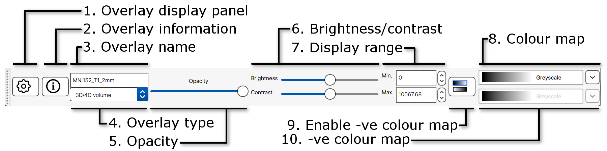 The display toolbar allows you to adjust the display properties of the currently selected image. Play around with the controls and note how the image display changes (but leave the “overlay type” as “3D/4D volume”).
The word “overlay” is interchangeable with “image”. FSLeyes uses “overlay” because it can also load some other non-image file types such as surface images.
-
Overlay display panel: Clicking on the gear button
(
 ) opens a
panel with more display settings.
) opens a
panel with more display settings. - Overlay information: Clicking on the information button ( ) opens a panel with information about the image.
- Overlay name: You can change the image name here (for display purpose only, it will not change the actual filename).
- Overlay type: FSLeyes allows some images to be displayed in different ways. This should be set to “3D/4D volume” most of the time.
- Opacity: Adjust the opacity (transparency) here.
- Brightness/contrast: Quickly adjust the image brightness and contrast here.
- Display range: Use these fields for fine-grained control over how the image data is coloured, instead of using the brightness and contrast sliders.
- Colour map: Choose from several different colour maps.
- Enable -ve colour map: If you are viewing an image that has both positive and negative values, this button allows you to enable a colour map that is used for the negative values.
- -ve colour map: Choose a colour map for negative values here.
If FSLeyes does not have enough room to display a toolbar in full, it
will display left and right arrows (  ), (
), (  ) on each side of the toolbar - you can click
on these arrows to navigate back and forth through the toolbar.
) on each side of the toolbar - you can click
on these arrows to navigate back and forth through the toolbar.
The ortho toolbar

The ortho toolbar allows you to adjust and control the ortho view. Play with the controls, and try to figure out what each of them do.
- View settings panel : Clicking on the spanner button opens panel with advanced ortho view settings.
-
Screenshot
 : Clicking on the camera button
will allow you to save the current scene, in this ortho view, to an
image file.
: Clicking on the camera button
will allow you to save the current scene, in this ortho view, to an
image file. -
Toggle canvases
 ,
,  , : These three buttons allow you to
toggle each of the three canvases on the ortho view.
, : These three buttons allow you to
toggle each of the three canvases on the ortho view. -
Canvas layout
 , , : These three buttons allow you to choose
between laying out the canvases horizontally ( ),
vertically ( ), or in a grid ( ).
, , : These three buttons allow you to choose
between laying out the canvases horizontally ( ),
vertically ( ), or in a grid ( ). -
Movie mode
 : This button enables movie
mode - if you load a 4D image, and turn on movie mode, the image
will be “played” as a movie (the view will loop through each of the 3D
images in the 4D volume).
: This button enables movie
mode - if you load a 4D image, and turn on movie mode, the image
will be “played” as a movie (the view will loop through each of the 3D
images in the 4D volume). - Toggle cursor/labels : This button allows you to toggle the anatomical labels and location cursor on and off.
-
Reset zoom
 : This button resets the zoom level to
100% on all three canvases.
: This button resets the zoom level to
100% on all three canvases. - Zoom slider: Change the zoom level on all three canvases with this slider.
Multiple views: lightbox
Open a lightbox view using View > Lightbox View.
If you drag the mouse around in the viewer you can see that the cursor
position is linked in the two views of the data (the ortho and the
lightbox views). This is particularly useful when you have several
images loaded in at the same time (you can view each in a separate view
window and move around all of them simultaneously). 
The lightbox view has a slightly different toolbar to the ortho toolbar.
- View settings panel : Clicking on the spanner button opens a panel with advanced lightbox view settings.
-
Screenshot : Clicking on the camera button
will allow you to save the current scene, in this lightbox view, to an
image file.
-
Z axis , , : These three buttons allow you to
choose which slice plane to display in the lightbox view.
-
Movie mode : This button enables movie mode.
- Slice range: These sliders allow you to control the beginning and end points of the slices that are displayed.
- Zoom: This slicer allows you to control how many slices are displayed on the lightbox view.
- Slice spacing: This slider allows you to control the spacing between consecutive slices.
Unlinking cursors
You can “unlink” the cursor position between the two views (it is linked by default). Go into one of the views, e.g., the lightbox view, and press the spanner button ( ). This will open the lightbox view settings panel. Turn off the Link Location option, and close the view settings panel. You will now find that this view (the lightbox view) is no longer linked to the “global” cursor position, and you can move the cursor independently (in this view) from where it is in the other views.
Close the lightbox view for now (click on the small red circle or X at the very top of the view).
Viewing multiple images
Now load in a second image
(sub-OAS30015_T1w_brain_pve_0.nii.gz) using File >
Add from file. This image is a tissue segmentation image of the
cerebrospinal fluid. In the bottom-left panel is a list of loaded images
- the overlay list. 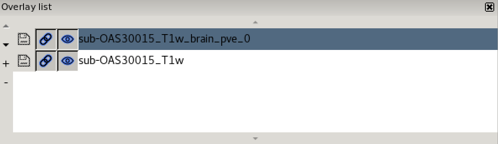
The overlay list shows the images which are currently loaded into FSLeyes. When you select an image in this list, it becomes the currently selected image - in FSLeyes, you can only select one image at a time.
You can use the controls on the display toolbar to adjust the display
properties of the currently selected image. Select the image you just
loaded (sub-OAS30015_T1w_brain_pve_0.nii.gz), and use the
display toolbar to change its colour map to Red-yellow.
The overlay list allows you to do the following:
- Change the currently selected overlay, by clicking on the overlay name.
- Identify the currently selected overlay (highlighted in blue).
- Add/remove overlays with the + and - buttons.
- Change the overlay display order with the ▲ and ▼ buttons.
- Show/hide each overlay with the eye button (
 ), or by double
clicking on the overlay name.
), or by double
clicking on the overlay name. - Link overlay display properties with the chainlink button (
 ).
). - Save an overlay if it has been edited, with the floppy disk button (
 ).
). - Left-click and hold the mouse button down on the overlay name to view the overlay source (e.g. its location in the file system).
Image information
In the bottom right corner of the FSLeyes window you will find the location panel, which contains information about the current cursor location, and image data values at that location. 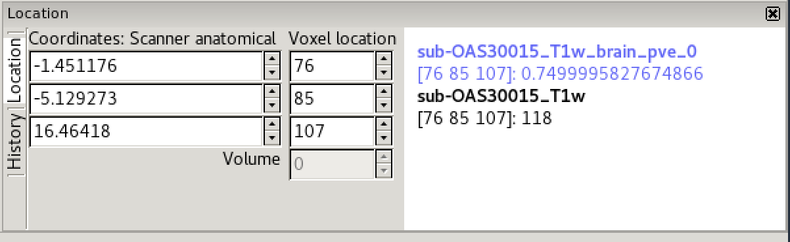
The controls on the left show the cursor location in world coordinates (millimetres). This coordinate system will change depending upon whether your image is in native subject space (scanner anatomical coordinates), standard template coordinates (e.g. MNI152), or some other coordinate space.
The controls in the middle show the cursor location in voxel coordinates, relative to the currently selected image. If the currently selected image is 4D (e.g. a time series image), the bottom control displays the currently selected volume (e.g. time point).
The area on the right displays the intensity value and voxel location at the current cursor location for all loaded images. Note that if you have images with different resolutions loaded, the voxel location will be different for each of them.
Viewing Atlases
It is often useful to look at images in standard space. This means that images are aligned (registered) to a reference template so that each coordinate corresponds to the same point in the brain in all images. This allows to perform group level analyses.
Let’s have a look at one of the most used templates, the MNI152.
-
Unload all the images from
fsleyesclicking on the minus (-) icon in the Overlay list panel (or open a new instance if you closed it before), press File > Add standard and select the imageMNI152_T1_1mm.As you can see it looks very similar to the T1w image we looked at earlier. This is basically an average T1w.
Because we are in standard space, we can turn on the atlas tools with Settings > Ortho View 1 > Atlases.
-
Now as you click around in the image you can see reporting of the probability of being in different brain structures. You might want to resize the different FSLeyes panels to increase the size of the Atlas information space (in general you do this by dragging around the edges of the different FSLeyes panels).
The atlas panel is organized into three main sections - Atlas information, Atlas search, and Atlas management. These sections are accessed by clicking on the tabs at the top of the panel. We will only cover the first two sections in this introductory practical.
Atlas information
The Atlas information tab displays information about the current display location, relative to one or more atlases: 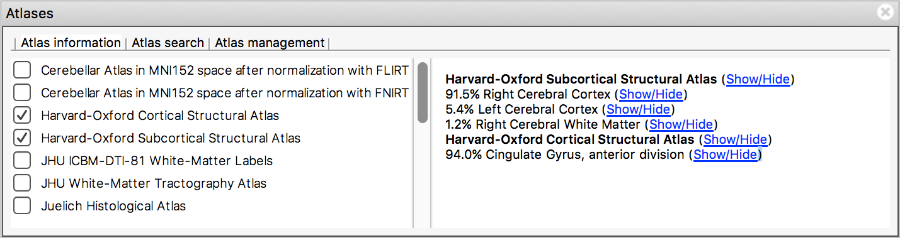 The list on the left allows you to select the atlases that you wish to query - click the check boxes to the left of an atlas to toggle information on and off for that atlas. The Harvard-Oxford cortical and sub-cortical structural atlases are both selected by default. These are formed by averaging careful hand segmentations of structural images of many separate individuals.
The panel on the right displays information about the current display location from each selected atlas. For probabilistic atlases, the region(s) corresponding to the display location are listed, along with their probabilities. For discrete atlases, the region at the current location is listed.
You may click on the Show/Hide links alongside each atlas and region name to toggle corresponding atlas images on and off.
Atlas search
The Atlas search tab allows you to browse through
the atlases, and search for specific regions. 
The list on the left displays all available atlases - the checkbox to the left of each atlas toggles an image for that atlas on and off.
When you select an atlas in this list, all of the regions in that atlas are listed in the area to the right. Again, the checkbox to the left of each region name toggles an image for that region on and off. The + button next to each region moves the display location to the (approximate) centre of that region.
The search field at the top of the region list allows you to filter
the regions that are displayed. 
When you type some characters into the search field, the region list will be filtered, so that only those regions with a name that contains the characters you entered are displayed. The atlas list on the left will also be updated so that any atlases which contain regions matching the search term are highlighted in bold.
Here are the screenshots you should see: 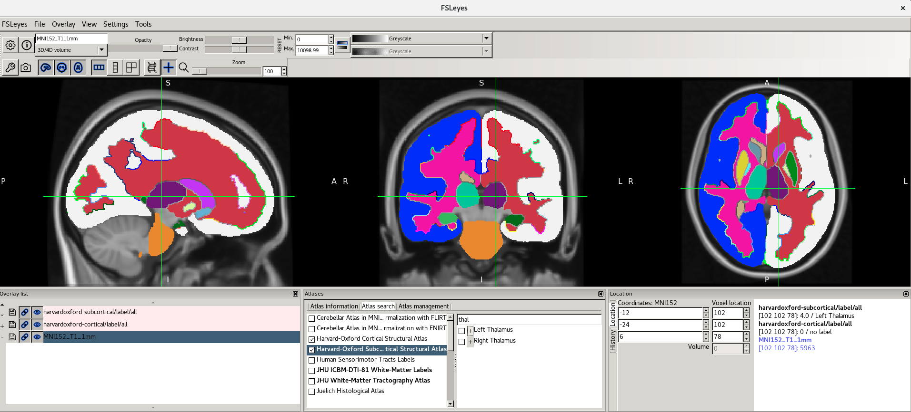
For more information about the atlases available please refer to the FSL Wiki.
Quit FSLeyes when you have finished looking at the atlases.
BONUS EXERCISE: Viewing different imaging modalities
So far we have seen examples of MRI T1-weighted scans (T1w). In research as well as in clinical setting, we acquire multiple imaging modalities from the same individual to look at different brain characteristics. Even if we acquire all the modalities in the same session, the images may differ in orientation and resolution.
Let’s take two imaging modalities from a different participant:
sub-OAS30003_T1w.nii.gz and
sub-OAS30003_FLAIR.nii.gz
- Do they have the same dimension?
- Do they have the same resolution?
Now let’s have a look at them in FSLeyes:
Change the intensity range for both images to be between 0 and 1000.
Show/hide images with the eye button (  ), or by double clicking on the image name
in the overlay list.
), or by double clicking on the image name
in the overlay list.
- Do they have the same orientation?
- Which brain characteristics are more visible in the T1w and which are more visible on FLAIR?
- Use
fslhdto get information on dimension and voxel size. - Look at the location panel to help with information about orientation
Do the T1 and the FLAIR have the same dimension?
No-Using fslhd, we can see that the
dimensions (dim1, dim2, and dim3)
of the T1 are 176 x 240 x 161 and the dimensions of the FLAIR image are
256 x 256 x 35.
Do the T1 and the FLAIR have the same resolution?
No-From the same fslhd commands, the
resolution can be found in the fields pixdim1,
pixdim2, and pixdim3. For the T1 the
resolution is 1.20 x 1.05 x 1.05 mm. For the FLAIR it is 0.859 x 0.859 x
5.00mm
Do the T1 and the FLAIR have the same orientation?
No In the bottom right panel you should see the warning: “Images have different orientations/fields of view”
What brain characteristics are more visible in the T1w and which are more visible on FLAIR?
On T1w, grey and white matter are more easily distinguishable. On FLAIR, brain lesions – white matter hyperintensities – are more clearly visible
In the next episode on structural MRI, we will learn how to align (register) the two images together to be able to look at the same point in the brain in both images.
Additional material
For a more extensive tutorial on FSLeyes features, please refer to the FSL course - FSLeyes practical
FSLeyes manual: https://open.win.ox.ac.uk/pages/fsl/fsleyes/fsleyes/userdoc/index.html
References
- FSL course material: https://open.win.ox.ac.uk/pages/fslcourse/website/online_materials.html
- McCarthy, Paul. (2021). FSLeyes (1.2.0). Zenodo. https://doi.org/10.5281/zenodo.5504114
- Michael Joseph, Jerrold Jeyachandra, and Erin Dickie (eds): “Data Carpentry: Introduction to MRI Data Analysis.” Version 2019.11, November 2019, https://github.com/carpentries-incubator/SDC-BIDS-IntroMRI
Key Points
- Images are sheets or cubes of numbers.
- Medical image data is typically stored in DICOM or Nifti format. They include a header that contains information on the patient and/or the image characteristics.
- An affine transformation maps the voxel location to real-world coordinates.
- Medical image viewers allow to navigate an image, adjust contrast, and localise brain regions with respect to an atlas.
Content from Structural MRI: Bias Correction, Segmentation and Image Registration
Last updated on 2024-07-23 | Edit this page
Estimated time: 65 minutes
Overview
Questions
- How do I process and quantify structural MRI scans?
- How do I register MRI with other modalities?
- How do I get key metrics out?
Objectives
- Perform basic pre-processing steps, such as bias correction and tissue segmentation
- Assess some common imaging artefacts in the sturctura MRI
- Discover how to align and quantify neuroimaging data at regional level
Introduction
In this section, you will be learning how to process and quantify structural MRI scans. T1-weighted structural MRI scans are the “workhorse” scan of dementia research. They provide high-resolution, detailed pictures of a patient’s anatomy, allowing researchers to visualize where atrophy caused by Alzheimer’s disease or other dementias is occurring. In addition, it provides anatomical reference to other imaging modalities, such as functional MRI and positron emission tomography (PET), that provide lower-resolution maps of brain function and pathology, so that regional quantification of key areas can be assessed in these scans.
We will be using two widely used software packages: SPM and FSL. These packages provide analysis and visualization functionality of structural and functional neuroimaging data, and they can be used in both cross-sectional and longitudinal studies. The subsequent outputs from these pipelines can be used in the quantification of other imaging modalities.
After the course, you will be able to perform basic measurements relevant to dementia research from structural MRI brain scans.
We will use the SPM and FSL tools to perform:
- image visualization of analysis outputs,
- intensity inhomogeneity correction,
- structural MRI segmentation,
- quantification of volumetric outputs, and
- registration to a standard space atlas.
Opening up an image
We are going to be working in the StructuralMRI
subfolder under data in your home directory.From the
previous lesson, you learned how to view and navigate images.
Clicking on the Applications in the upper left-hand corner and select
the terminal icon. This will open a terminal window that you will use to
type commands
From the terminal window, type fsleyes to open up the
image and have a look around. 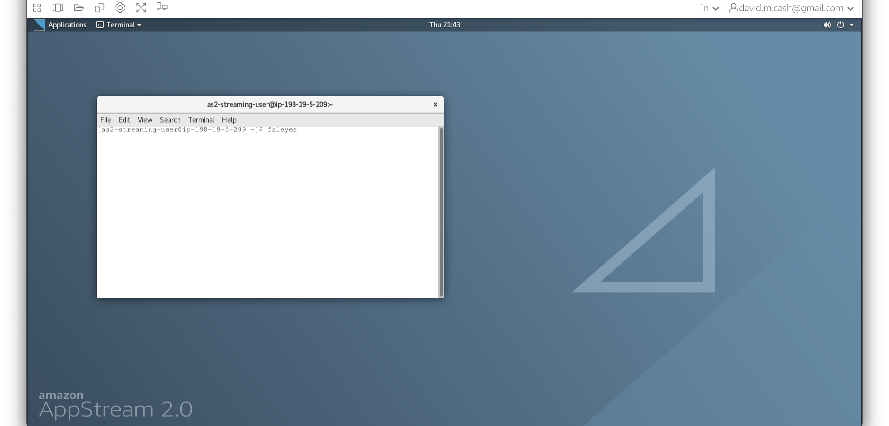
Now we choose the file sub-OAS_30003_T1w.nii by going to
the File menu and choosing the Add Image command 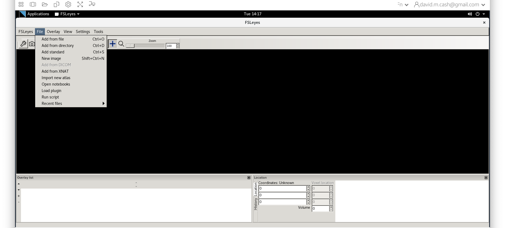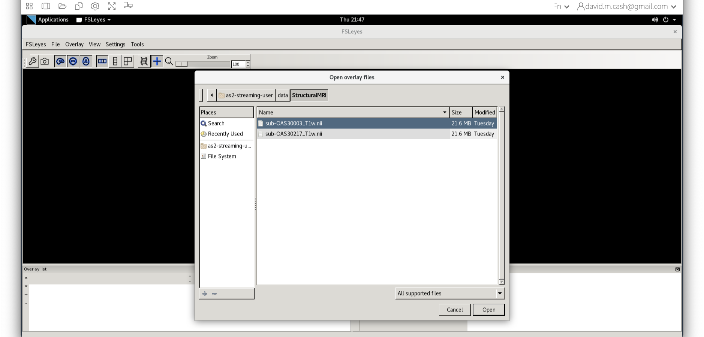
Run Bias Correction and Tissue Segmentation
Small variations in the magnetic field can result in changes in the image intensity that vary slowly spatially. These variations are not due to anatomical differences. We can visually identify this image inhomogeneity in the white matter, where voxels in one part of the brain might be so affected by it that they have similar intensity values as grey matter voxels in other brain regions. However, the intensities in the white matter voxels should be more or less uniform throughout the brain. Any remaining inhomogeneity in the image can significantly influence the results of automated image processing techniques, so we need to correct for these effects. The process that removes this image inhomogeneity is typically referred to as bias correction.
The next step is to reliably identify what type of tissue each voxel contains. While the resolution of structural MRI is quite high (typically around 1 mm), there is still the likelihood that a voxel will contain more than one tissue in it. The process of tissue segmentation looks at the voxel intensity, compares it to its neighbours and prior information about what tissues we would expect to have in that voxel and assigns a probability that the voxel contains that tissue. It typically generates n different volumes, where n is the number of tissue types you want to use to classify the brain. We typically focus on three tissue probability maps in particular:
- Grey matter (GM),
- White matter (WM), and
- Cerebrospinal fluid (CSF)
SPM performs the bias correction and tissue segmentation steps simultaneously. Follow the steps below to obtain bias-corrected images and tissue probability maps.
Bias Correction and Segmenation Steps
- Type
spm petto launch SPM
- SPM will then create a number of windows. You want to look at the Main Menu Window that has all of the buttons. 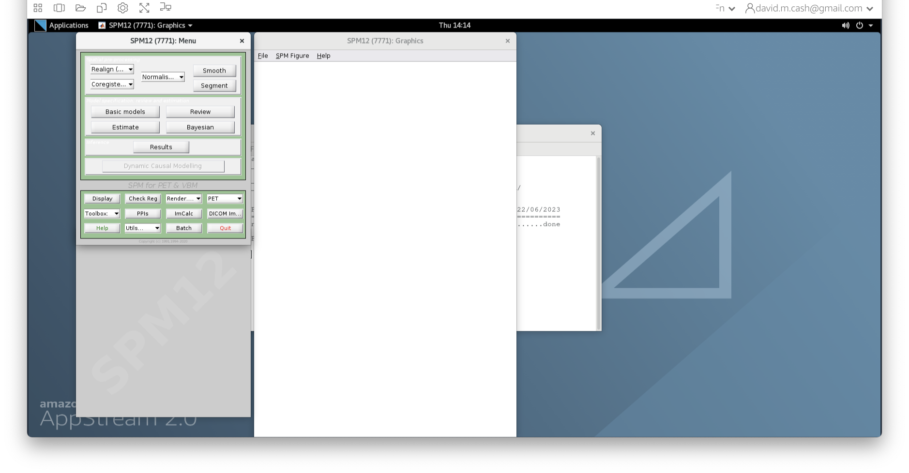
- From main menu, select the Segment button. This will launch a window known as the batch editor, where you can adjust settings on the pipeline to be run. 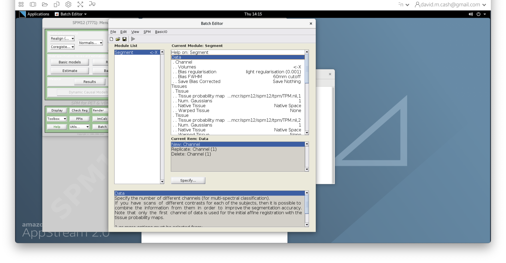
- Edit the options for segmentation:
- Under Data->Channels->Volume, click on “Specify…”. 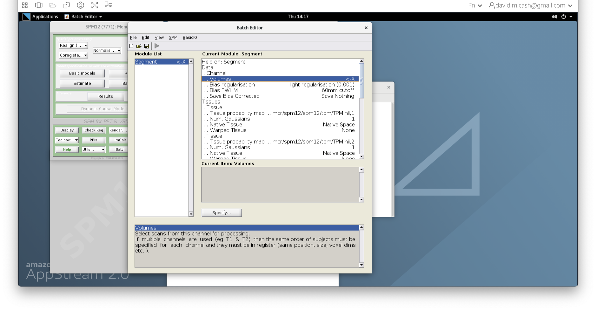
- In the dialog box that opens up, please navigate to the folder
dataand thenStructuralMRI. Then select the first imagesub-OAS30003_T1w.nii. Once you click on it, you will notice the file move down to the bottom of the box which represents the list of selected files. 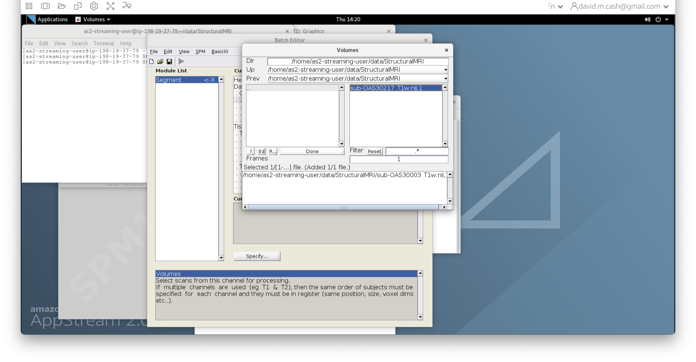 - Click the
Donebutton - Back in the batch editor, under Data->Save Bias Corrected, please choose “Save Field and Corrected” 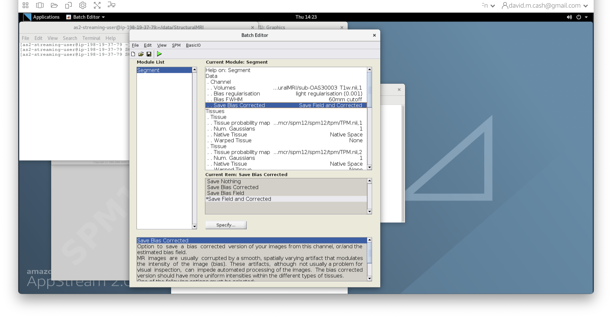
- Under the Tissues section, please make sure that the first three tissue types, which represent GM, WM, and CSF, have the native tissue subfield set to native, while the final three tissue types (4-6), which represent non-brain structures, have the native tissue subfield set to None. 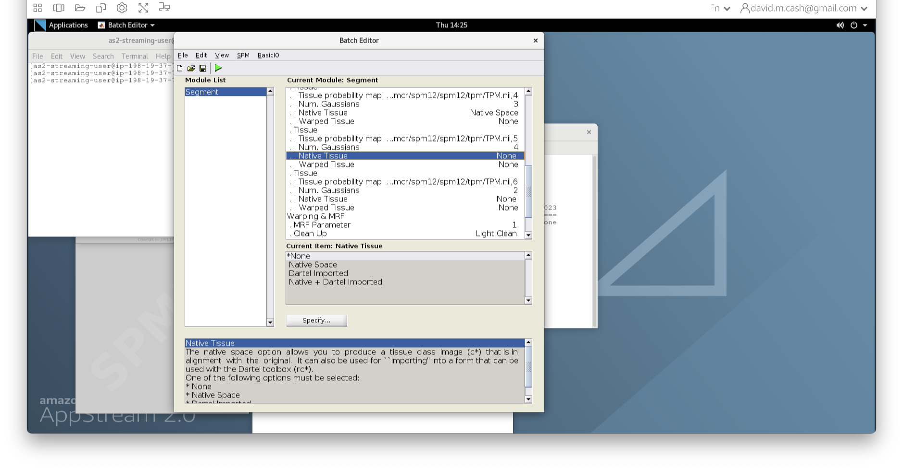
- Click the green run button to start! It should take about 5-10
minutes. You will see a lot of other things happening in other windows.
The terminal will say
Done - Segmentwhen it has finished.
When you are using these workflows for your actual research, we
highly recommend that you save the SPM pipelines so
that you could run them again on the exact same data with the exact same
settings. You can do that by selecting Save batch from the
File menu. This will save the batch, or pipeline, as a file
with a .mat extension. You can load this file back in by
selecting the Load batch from the File menu
and selecting the file you save.
Quality check
The quality check is an important part of any analysis. We are going to visualize the outputs from SPM Segment and make sure that the bias correction and segmentation have worked.
Bias correction
- Use
fsleyesagain and open up the original imagesub-OAS30003_T1w.niias you did at the start of the session. - Change the image lookup table to
NIH [Brain colors]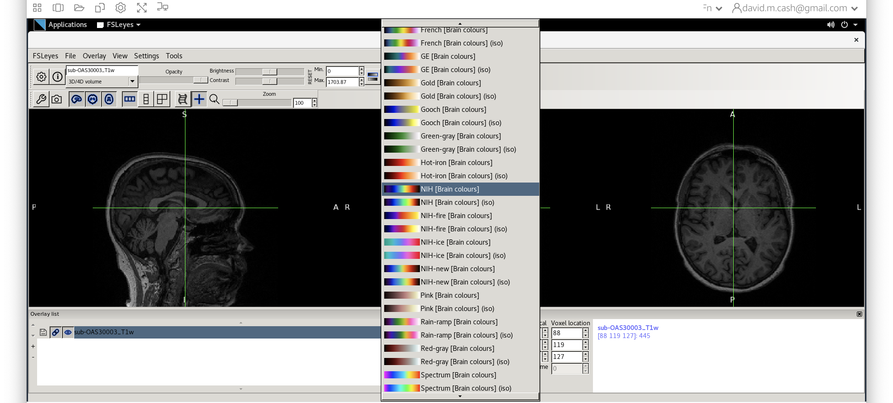 - Then change the image minimum to 40 and the maximum to 600. This
means that all intensities 40 and below will map to the first color in
the lookup table, and all voxels 600 and above will map to the last
color. The white matter should be yellow to red. 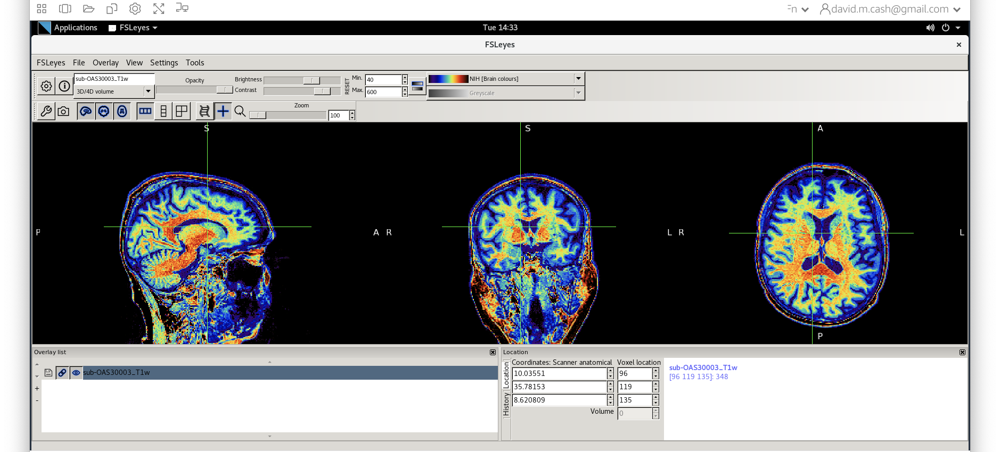
- Next add the bias corrected image, which is called
msub-OAS30003_T1w.nii. Change the lookup table to NIH as you did in Step 2. Change the minimum to 40 and maximum intensity to 500 similar to what you did in Step 2 and 3. 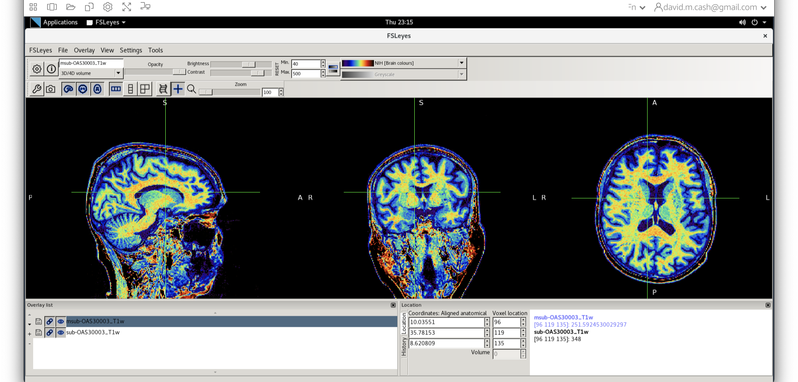
When you add this image, it will overlay on top of the original
image. Think of this new image a completely opaque, so that you no
longer see the original one. If you want to see the original one, then
you need to either turn it off using the eye icon (  ) right by the
file, or you need to turn the opacity (slider near the top of the screen
which is marked opacity.)
) right by the
file, or you need to turn the opacity (slider near the top of the screen
which is marked opacity.)
Exercise 2
Use the eye icon in the overlay list right next to the file
msub-OAS30003_T1w.nii and turn this image off and on many
times. This will allow you to compare with the original image.
What do you notice about the image in the white matter area when comparing the bias correct and original image?
Tissue segmentation
Now that we are happy with the bias correction, lets look at the tissue segmentation.
- Use the icon to turn off the original image. Select the bias corrected image and make sure the colormap is back to the first option “Greyscale” 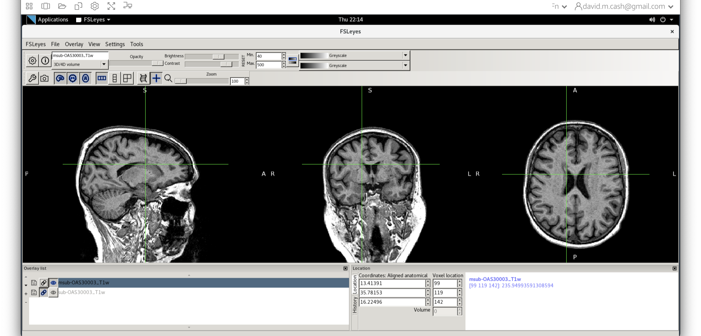
- Now add the grey matter probability image
c1sub-OAS30003_T1w.nii. - Choose the probability map and set the lookup table to Red. Change the minimum intensity to 0.2 and the maximum intensity to 0.9. This will eliminate some noise from very low probability voxels.
- Use the opacity slider to make the grey matter probability map transparent. 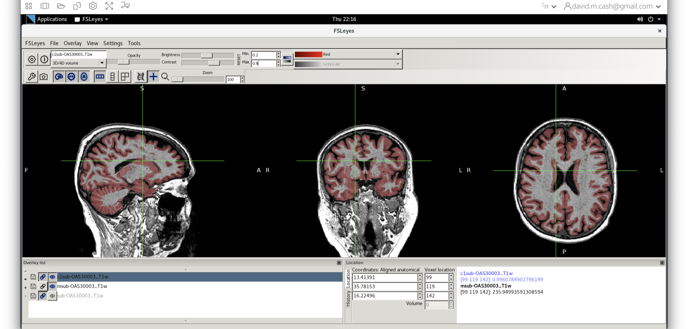
- Look around the image, zoom in places, and try turning the grey
matter probability map off and on. The goal is to make sure the grey
matter probability map is not:
- Missing any grey matter
- Not including other tissue (WM, CSF, non-brain tissue that has a similar intensity to GM)
You should have an output that looks something like this. 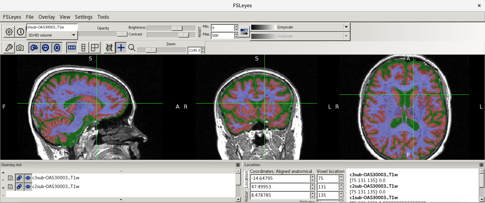
Obtaining volume
One thing that we are often interested in is to obtain the actual volume of grey matter, or a particular brain region. There are helpful utilities in FSL to extract the volume from the tissue probability maps. First we will change our working directory to the Structural MRI folder:
Then we will run this command to get the total grey matter volume:
OUTPUT
719954 961026.312500This will produce two numbers. The first number is the number of voxels in the grey matter. These voxels as discussed earlier have physical dimensions indicating how the volume that each individual voxel represents. So the second value indicates the total volume of the grey matter (usually represented in units of cubic millimeters, 1\(ml\) = 1000\(mm^3\)).
Coregistration to standard space
MRI scans can be acquired in any orientation. Even when we think we are getting a sagittal or coronal acquisition, the patient may end up in the scanner at a slant. This makes it difficult to identify key anatomical landmarks. We may also want to compare common anatomical structures across a whole sample of subjects. The main solution to this is to use image registration to orient our images and align them with a standard anatomical coordinate system. In this case, we will be aligning our data to the Montreal Neurological Institute MNI152 atlas. We are not looking to perform an exact voxel to voxel match between our image and the atlas. Instead, we just want to align the images such that the orientation and the relative size are aligned.
Skull stripping
Before we can perform the registration, we will use the tissue
probability maps to skull strip the image. Skull stripping
removes the non-brain tissue (scalp, dura, neck, eyes, etc) from the
image. Before we run the commands, let’s first check what working
directory we are in by using the command pwd:
OUTPUT
/home/as2-streaming-user/data/StructuralMRIIf you have a different output from the above, then run the following command:
First we will use the FSL utility fslmaths to create a
brain mask by using the tissue probability maps from SPM.
fslmaths is a great swiss-army knife utility to do lots of
helpful little image processing bits.
BASH
fslmaths c1sub-OAS30003_T1w.nii -add c2sub-OAS30003_T1w.nii -add c3sub-OAS30003_T1w.nii -thr 0.5 -bin sub-OAS30003_T1w_brain_mask.niiLet’s break this command down a little bit:
- First, we state the command we want to run
fslmaths - We then specify our input image, the GM map
c1sub-OAS30003_T1w.nii - We then specify the first operation
-add - We then specify what we want to add to our input image. In this
case, it is the WM map
c2sub-OAS30003_T1w.nii. The resulting image would contain the probability that a voxel is either GM or WM. - We then specify that we want to add another image, and this time it is the CSF map. This image now holds the probability that a voxel is GM, WM, or CSF, which are the three main tissue types in the brain that we want to process.
- We will then threshold this image at 0.5 using the
-thr 0.5option. This says to only keep voxels who have a probability of 0.5 or greater. All other voxels are set to 0. - Our final operation is to binarize the image. Any values
that are not zero are set to one. This creates a mask which says whether
the voxel is inside (1) or outside (0)
of the brain.
- Finally, we save our results into the new image file
sub-OAS30003_T1w_brain_mask.nii
Now that we have created a mask, we are going to remove all the information outside of the mask using the following command:
BASH
fslmaths msub-OAS30003_T1w.nii -mas sub-OAS30003_T1w_brain_mask.nii.gz msub-OAS30003_T1w_brain.niiThis command masks our bias corrected image with the brain mask and
makes a new file which has the name
msub-OAS30003_T1w_brain.nii. Take a look at the image in
fsleyes. 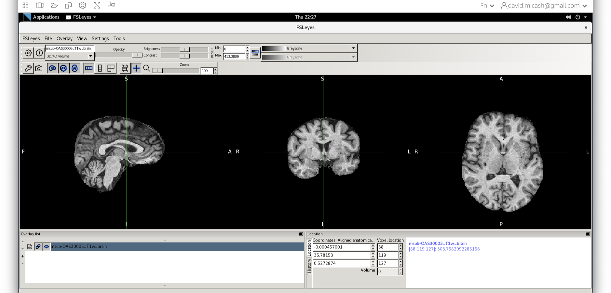
We will then use the FSL registration program FLIRT to align our image to the standard space MNI152. Please follow the steps below:
- On the terminal window, please type in the following command
Flirt - This will open a dialog box. We will change the following settings:
- For reference image, click on the folder icon and choose the image
MNI152_T1_1mm_brain - For the input image, please select the mask we created above
msub-OAS30003_T1w_brain.nii - For the output image, please type in a new name
msub-OAS30003_T1w_brain_MNI.niiThe final command setup should look like the screenshot below. 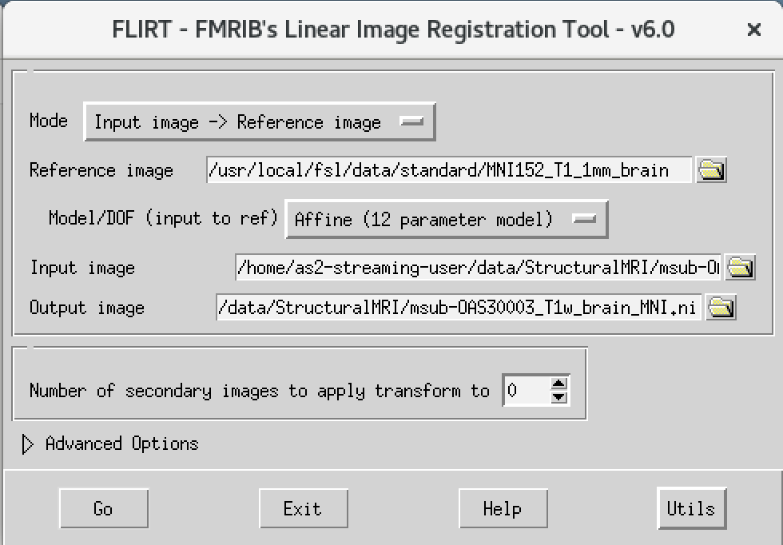
- For reference image, click on the folder icon and choose the image
If your window looks like this, then click the Go button at the bottom, in the terminal, you will see the command line program that would run what you have set up in the dialog box. If you were to select that command and run it in the terminal it would do the same thing.
Quality check
Let’s open fsleyes and open the output from the
co-registration msub-OAS30003_T1w_brain_MNI.nii. 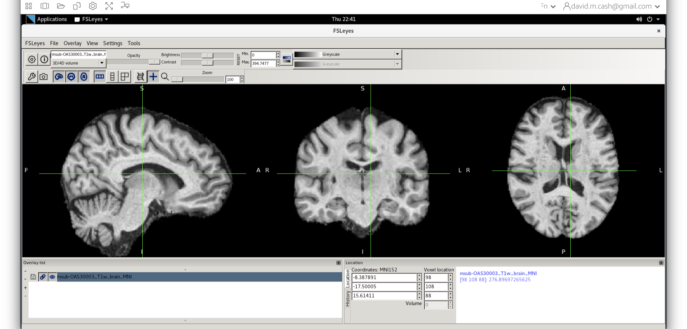
Now click on the Add Standard function. This is where fsleyes keeps all of the standard atlases and templates so that you can quickly access them. 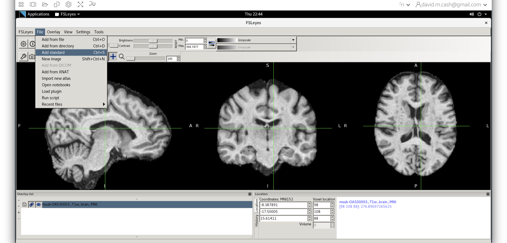
Select the MNI152_T1_1mm_brain from this list of files.
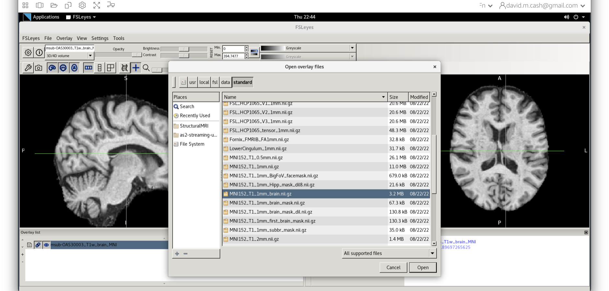
We can now check if our image is registered by flicking back and forth between the MNI image and our image.
Stretch exercises
If you have completed all of the above and want to keep working on more structural imaging data, please try the exercises below.
BONUS Exercise 2
The volumes that come out of fslstats assume that each
voxel is completely full of GM, even though for some voxels the
probability may be very small. That can lead to inaccuracies, so there
are a couple of ways we can more accurately measure from tissue
probability maps.
Before we start, let’s make sure we are in the right working
directory by using the cd command.
The first approach is to only count voxels with a majority of GM. So we will threshold by the value of 0.5 before calculating our volume.
OUTPUT
465968 621994.569978The second approach is to get the mean and volume of the all the non-zero voxels.
OUTPUT
0.641076 719954 961026.312500This will produce three numbers:
- The mean of the non-zero voxels
- The number of voxels greater than zero.
- The volume of the voxels greater than zero.
If you multiply (1) by (3), this would be what we call the probabilistic volume of the GM and it accurately accounts the amount of GM in each voxel, which should give you a volume of around 616,090.
How do these volumes compare with the original volume you obtained?
BONUS Exercise 3
Let’s take a look at our other image
sub-OAS30217_T1w.nii. Perform the same steps as you did for
the first image:
- Segmentation
- Skull Stripping
- Co-registration to standard space Run the same skull stripping and
registration as you have done before. Now open up both standard space
images in
fsleyes
What do you observe about the images?
BONUS Exercise 4
Let’s now try to co-register two imaging modalities from one participant (within-subject registration)
At the end of the previous session on data visualization, you looked
at a T1-weighted scan and a FLAIR scan from the same participant
(sub-OAS30003_T1w.nii.gz and
sub-OAS30003_FLAIR.nii.gz, load them again in FSLeyes if
you need a refresh). As you will have noticed, they have different
dimensions, resolution and orientation, so if we want to look at the
same point in the brain in both images we need to align them.
First, we need to choose which image we want to keep unchanged (reference) and which one we want to align to the reference (input). Let’s assume we want to register the FLAIR image to the T1. We have already prepared a skull-stripped version of the images for you so they are ready to be aligned with FLIRT.
The way to do this is very similar to what you did before to co-register a T1 to standard space. Please follow the steps below:
- On the terminal window, type
Flirt - This will open the dialog box you used before. The new settings are:
- For reference image, delete the text in the box and type
~/data/ExtraStructuralMRI, then click on the folder icon and choose the imagesub-OAS30003_T1w_brain.nii.gz - Change the Model/DOF (input to ref) to
Rigid Body (6 parameter model) - For the input image, click on the folder icon and choose the image
sub-OAS30003_FLAIR_brain.nii.gz - For the output image, please type in a new name
sub-OAS30003_FLAIR_to_T1w.nii.gz
- For reference image, delete the text in the box and type
The final command setup should look like the screenshot below: 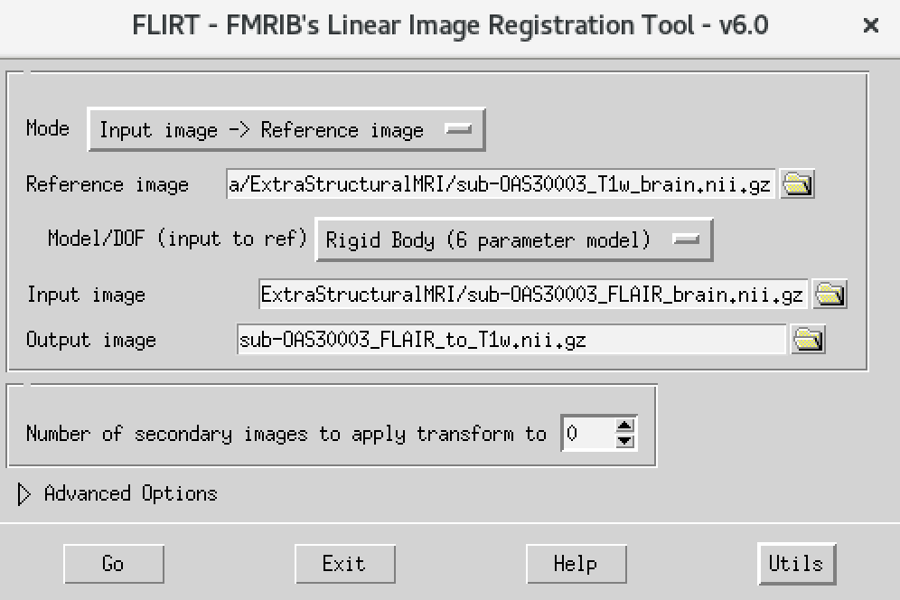
If your window looks like this, then click the Go button at the bottom, in the terminal, you will see the command line program that would run what you have set up in the dialog box. If you were to select that command and run it in the terminal it would do the same thing.
Once done, open the result in FSLeyes:
We can now check if our image is registered by flicking back and forth between the T1 image and the FLAIR registered image.
Can you think of why the registered FLAIR image appears blurred in the sagittal and coronal plane?
Now try to do the opposite: co-register the T1 to the FLAIR.
What differences do you notice with respect to the previous case (FLAIR co-registered to T1)?
Can you think of different cases where you would want to use T1 or FLAIR as your reference?
Key Points
- Structural MRI provides high-resolution anatomic information for neuroimaging analysis
- Bias correction removes image inhomogeneities
- Tissue segmentation identifies key tissue types (grey matter, white matter, cerebrospinal fluid) from T1 weighted images
- Co-registration of MRI to other modalities can be used to analyse these images at a regional level.
Content from Processing and analysing PET brain images
Last updated on 2024-07-23 | Edit this page
Estimated time: 45 minutes
Overview
Questions
- What does positron emission tomography measure?
- What are some common processing steps used for PET quantification?
- How can I extract key measurements of tracer binding from dynamic PET data?
Objectives
- Understand the basic structure of 4D PET data and key variables needed for quantification.
- Explain the differences between static and dynamic acquisitions, and what information can be derived from them.
- Perform the basic processing steps involved in PET image quantification and analysis.
Introduction
This tutorial is an introduction to working with PET data in the context of AD neuroimaging. Due to the limited time, we will not have time to fully recreate a typical image processing pipeline for PET data, but have included enough steps that you’ll be able to perform the minimum steps needed to generate a parametric SUVR image. The provided dataset includes T1-weighted MRI, [18F]MK-6240 tau PET and [11C]PiB amyloid PET scans for a single subject at a single timepoint. For ease, the T1-weighted image was already rigidly aligned and resliced to a 1mm isotropic image in MNI152 space. The provided PET scans were acquired using different protocols to demonstrate two common ways that PET data can be acquired. The tutorial will explain the differences between these types of acquisitions and what information can be derived from them.
Background: PET data, image processing, and quantification
PET data are collected on the scanner typically in list mode. This is quite literally a logged record of every event the scanner detects, but this type of data is not all that useful for interpretation. Viewing the images requires that the list mode data be reconstructed. The provided images have already been reconstructed with the widely-used Ordered Subset Expectation Maximization (OSEM) algorithm with common corrections (scatter, dead time, decay, etc.) already applied during the reconstruction. Notably, no smoothing was applied during the PET reconstruction.
Gaining familiarity with 4D PET data
Prepare working directory
- Open a new terminal window and navigate to the directory with the
unprocessed PET NIfTI images and data
/home/as2-streaming-user/data/PET_Imaging. - Use
lsto view the contents of this directory - Use
cdto change your working directory to the following location:
View PET metadata
View the information in the .json file for MK-6240 and PiB images by opening the .json files for the MK-6240 and PiB images. For example, type the following into the terminal:
Open up multiple terminal windows to view the .json file contents side-by-side.
Note that the Time section differs with regard to the scant start and injection start times. Namely, the MK-6240 scan starts 70 minutes after tracer injection, whereas the PiB image starts at the same time as the tracer injection. The latter acuisition protocol is often referred to as a full dynamic acquisition and enables us to calculate more accurate measurements like distribution volume ratio (DVR) and often additional parameters from the time-series data (e.g., \(R_1\) relative perfusion). If we had arterial data available, we could also use the full dynamic scan to perform kinetic modeling.
Also note the framing sequences differs between the two tracers. MK-6240 is using consecutive 5-minute frames whereas PiB starts with 2-minute frames for the first 10 minutes and then 5-minute frames thereafter.
-
For both images, the decay correction factors correspond to the scan start time (indicated by “START” in the DecayCorrected field). This may or may not have consequences for how we quantify the image. For example, if we wanted to calculate the standard uptake value \(SUV = C(t) / InjectedDose * BodyMass\),
we would need to decay correct the MK-6240 scan data to tracer injection but this is not needed to calculate SUV for the PiB scan because the scan started with tracer injection.
Now close the .json files in gedit.
View 4D PET data
- Open
sub001_pib.niiusingfsleyes. - Set the minimum threshold to 0 and the maximum threshold to 30,000 Bq/mL
- You are currently viewing individual PET frames that have not been denoised in any way. Notice the high noise level in the individual PET frames. This is why we often apply some type of denoising algorithm to the PET data before processing and quantification.
- Use your cursor to scroll around the image and observe the values in voxels in the brain. These values are activity concentrations given in \(Bq/mL\), where Bq (Becquerel) is the SI unit for radioactivity and is expressed as a rate (counts per second). In PET, the noise in the image is proportional to the inverse of the square root of the counts. Thus, the more counts detected, the less noisy the image will appear.
- Use the Volume field to advance through the PET frames from the first frame (index = 0) to the last frame (index = 16). Moving higher in volume indices is moving forward in time, like a 3D movie, as the tracer distributes throughout the brain over time. Note how the distribution of the tracer changes from the first frame to the last frame. The tracer distribution in early frames of this acquisition largely reflects the tracer perfusing the brain tissue whereas later frames largely reflect a combination of free tracer and specific and non-specific tracer binding. You may need to adjust the upper window level to a lower value to more clearly visualize the later PET frames. You’ll also likely notice that the later frames are noisier than the beginning frames, again, this has to do with counting statistics and the reduced counts detected over time due to radioactive decay and lower tracer concentration in the brain at later timepoints.
- Close the 4D PET image in FSL by selecting the image in the Overlay list at the bottom of the page and clicking Overlay -> Remove from the menu at the top of the page.
Creating a SUM PET image
We’ll create two different SUM images from the PiB scan; one for early- and one for late-frame data to visualize the differences in tracer distribution between these timepoints more easily. The early frame data will SUM 0-20 minutes post-injection whereas the late frame will SUM 50-70 minutes post-injection. We’ll do the late-frame image first and then the early-frame image. You can reference the FrameTimeStart and FrameTimeEnd fields in the .json file to determine which frames correspond to 0-20 min and 50-70 min postinjection.
Using ImCalc to Sum Frames
Open SPM12 by typing
spm petin the command line.Select the
ImCalcmodule.
-
For each variable in the GUI, you will need to specify values using the
Specifybutton. Use the values specified below for each variable listed.Input Images– here we want to specify the input images that we are going to use to perform the image calculation. The order that the images are specified will determine the order they are referred to in the expression field below (e.g., the first image is i1, the second image is i2, etc.,) However, SPM will only load one frame at a time for 4D data, so each frame needs to be specified individually using the Frames field. The frame number is then delineated by the filename followed by a comma and the frame number. Note that SPM uses index 1 for the first frame, which corresponds to index 0 in FSL.Enter the frame number corresponding to the frame that spans 50-55 min post-injection (frame number 14) and hit enter. Click on the
sub001_pib.nii,14file to add this to the list. 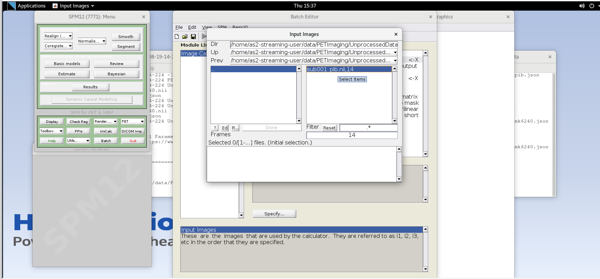Enter the next framenumber and similarly add it to the list. Repeat until you’ve added the last four frames of the PiB image corresponding to 50-70 min post-injection (frames 14, 15, 16, and 17). Note the order you input the images corresponds to i1, i2, … in the Expression field later. Once you’ve selected the last four frames click Done to finalize the selection. 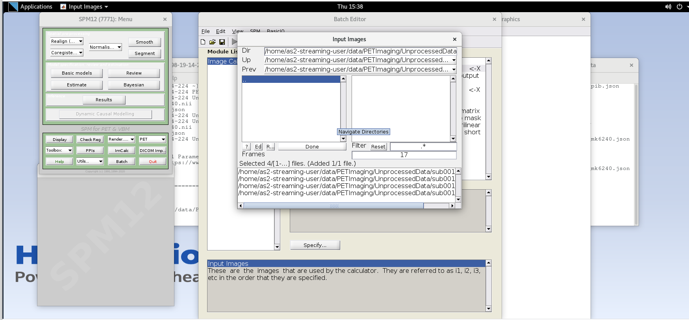
Output Filename– enter textsub001_pib_SUM50-70min.nii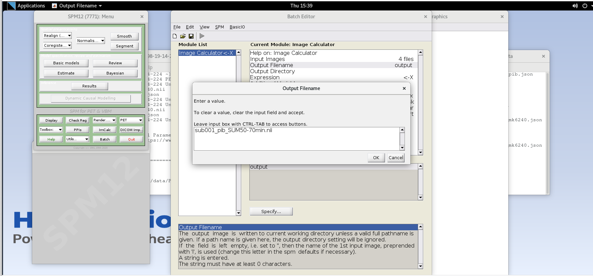Output Directory– specify the output directory for the file. If you leave this blank, SPM will output the file in the present working directory (i.e., the directory that SPM was launched from in the command line)-
Expression– because the frames are all 5 minutes long at this part of the sequence, we can simply take the average to sum the last 20 minutes of counts.Enter the expression
Note that taking the average of these frames is equivalent to summing all of the detected counts across the frames and dividing by the total amount of time that has passed during those frames (i.e., 20 min). 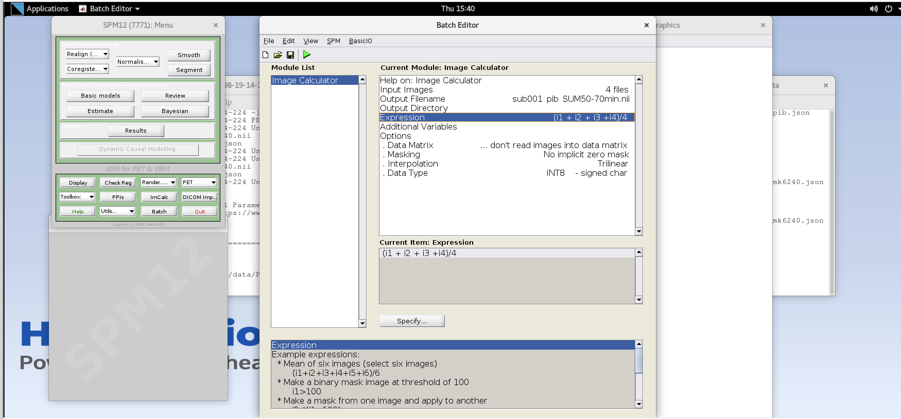
Data Matrix,Masking,Interpolationcan all use default valuesData Type– specify FLOAT32 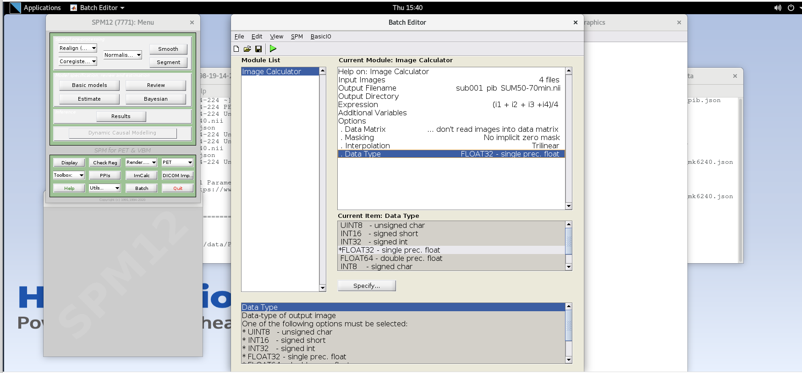
Verify ImCalc inputs and then run the batch by pressing the green play button at the top of the batch editor. This should create a new NIfTI file with the late-frame summed data.
-
Open the 50-70 min SUM image in FSLeyes and note the difference in noise properties vs. those you observed in a single frame. (note: you will likely need to use different thresholding to see the image; e.g., 0-20,000 Bq/mL) The SNR has improved because we are now viewing an image with more total counts. Notice that you can now more clearly see some contrast between the precuneus and the adjacent occipital cortex in the sagittal plane just to the left or right of mid-sagittal. You can similarly see differences in intensity between much of the cortex and the cerebellar GM, a common reference region used for amyloid PET as it typically has negligible specific binding in the cerebellum.
Do you think this person is amyloid positive or negative?
-
Repeat the above steps to generate the SUM image for the early frame data. Make sure to remove the previous volumes before adding the new volume in the Input Images. You will need to use the first seven frames corresponding to the first 20 min of data. Note that the frames are not all the same duration and a straight average is no longer equivalent to summing all of the counts and dividing by the total time. How can we use a weighted average to account for the differences in frame durations between the first five and last two frames of the first 20 minutes?
Name this file
sub001_pib_SUM0-20min.niiOpen the 0-20 min SUM image in FSLeyes and compare to the 50-70 min SUM image. Note the differences in GM/WM contrast between the images and the differences in noise properties. You will likely have to change the max intensity settings in both images to be able to observe the differences in contrast.
Close the SPM batch editor
Image Smoothing
As you can see from viewing the unsmoothed images, they are still quite noisy, particularly at the voxel level. In this section we’ll use a simple Gaussian smoothing kernel to reduce the voxel-level noise. We are really trading voxel variance for co-variance between voxels. This means that the activity concentration in any particular voxel will have lower variance, but will be more influenced by neighboring voxels. Thus, we are degrading the spatial resolution of the image slightly to improve the noise characteristics. The size of the Gaussian smoothing kernel is typically specified as the full-width of the kernel at half the maximum value of the kernel.
Apply smoothing to SUM images
- Click on the Smooth button to launch the Smooth module in SPM and
use the following inputs:
-
Image to Smooth- Specify the two SUM images (you can do both at the same time) -
FWHM– 4 4 4 (this specified an isotropic 4 mm full-width half Gaussian smoothing kernel) -
Data Type– Same -
Implicit Mask– No -
Filename prefix– ‘s’ (this prepends an “s” onto the filename to indicate the newly created image was smoothed)
-
- Press the green play button to run the smoothing module.
- Close the SPM batch editor.
- View the resultant smoothed images in FSL (the ones with an ‘s’ prefix in the filename). Note the reduction in voxel-level noise but also the slight reduction in spatial resolution.
Intermodal Registration
While we can quantify PET images without anatomical data like
T1-weighted MRI, we can gain considerable regional detail if we align
our PET images to an anatomical reference. This section will use SPM12’s
Coregister module to register the PET data to a T1-weighted
MRI. We’ll first view the problem in FSL to demonstrate why we need to
register the images and then perform the co-registration to align the
PET data to the T1-w MRI.
View images in FSL
- Open the
rsub001_t1mri.niiand in FSL. Use the down arrow next to the Overlay list to move the T1 to the bottom of the list. Select the T1 and set the window min and max to 0 and 1,400, respectively. - Select the smoothed 50-70 min SUM PIB image in the viewer and adjust
the min and max window level to 0 and 30,000 respectively. Select the
Hot [Brain colours]colormap for the PET image. Reduce the Opacity slider down until you can see both the MRI in the background and the PET image in the foreground. - Notice that the images are not aligned. Thus, we cannot yet use the structural MRI to extract regional PET data. We first need to register the PET image to the
Coregister PET to T1-weighted MRI.
Caution: SPM will overwrite the transformation matrix in the Source Image and Other Image! As such, we will first create a safe copy of our SUM and 4D images before running the Coregistration module).
- Create copies of the smoothed late-frame SUM image and the 4D pib
image.
-
In the terminal, create a new directory called “safe” in your working directory.
-
Copy the
ssub001_pib_SUM50-70min.niiandsub001_pib.niiimages to the safe directory using the cp command in the terminal.
-
- Open the Coregistration module by selecting
Coregister (Est & Res)from the Spatial pre- processing drop down. This function will estimate the parameters needed to align the source image to the reference image, write those transformations to the NIfTI headers for those files and will create new images with the image matrices resliced to align voxel- to-voxel with the reference image.- Select
rsub001_t1mri.niifor the reference image. - Select the smoothed 50-70 SUM image for the source image.
ssub001_pib_SUM50-70min.nii - Optional: if you’d like to also apply this registration to the 4D data, Select the 4D data for Other Images. You will need to enter each volume in the 4D image to apply the transformation matrix to each frame in the time series, or you can specify a subset of the frames to create a 4D image with just some frames included.
- We will use default values for
Estimation Options - In the
Reslice OptionsSet Interpolation to “Trilinear” and masking to “Mask Images”
- Select
- Press the green play button to register the PET data to MRI.
Review registration results
- In FSL, remove all of the loaded images using the Overlay>Remove All command.
- Open the T1-weighted MRI and the resliced registered SUM PET image
rssub001_pib_SUM50-70min.niiin FSLeyes. - Select the SUM image. Select the
Hot [Brain colours]colormap for the SUM PET image and set the min to 0 and max to 25,000. - Use the opacity slider to make the SUM PET image ~50% translucent.
- Scroll around in the image to view the registered SUM PET image overlayed on the T1-weighted MRI. Notice the PET image now aligns with the MRI. Also note the elevated binding in the precuneus, cingulate cortex, and frontal, parietal and temporal cortices.
- Also observe the registration accuracy by looking at features common to (i.e., mutual information) both T1-weighted MRI and PiB PET. For example, elevated non-specific PiB binding can be observed in the cerebellar peduncles (white matter) and a lack of tracer uptake is observed in the CSF filled spaces like the lateral ventricles which are also low intensity on the T1-w MRI.
- Compare the image headers for the SUM image in the safe directory
with the SUM image with the same name that was used as the source image
for registration. You can show the header info in the terminal using
fslhdor select Setting>Ortho View1>Overlay Information in FSLeyes. Notice that the sform matrix parameters have changed to reflect the spatial transformation needed to align the PET image to the T1-weighted MRI. This allows a viewer to show the PET image aligned to the T1-w image in world coordinates without having to alter the image matrix. - Now compare the image headers for the resliced SUM image
rssub001_pib_SUM50-70min.niiwith the T1-weighted MRI. The matrix size and sform matrix should be identical. This is because SPM resliced the PET image matrix such that the image matrix itself now aligns with the T1-weighted MRI, and thus no transformation in the header is needed to align the images in the viewer.
Create a standard uptake value ratio (SUVR) image
In this section, we will use the registered sum image and the T1-weighted MRI to create a cerebellum GM ROI and generate a parametric SUVR image. We’ll do all of these steps using FSL commands and functions. We’ll first create a hand-drawn ROI in the inferior cerebellum based on the MRI, and then use this mask to intensity normalize the SUM PET image and create our SUVR image. Note that we are specifically using the 50-70 min SUM image to generate the SUVR image as this is the timepoint wherein PiB has reached a pseudo “steady state” wherein binding estimates are more stable.
Create a hand-drawn cerebellum GM ROI
- In
fsleyes, turn off the PET overlay. - Turn on Edit mode by selecting Tools -> Edit Mode
- In the image viewer, navigate to the inferior portion of the cerebellar GM (~Z voxel location 30). You should be 1-2 axial planes below the inferior GM/WM boundary in the cerebellum.
- Select the T1-w MRI in the Overlay list and click the icon on the left side of the viewer that looks like a sheet of paper to create a 3D mask using the T1-w image as a reference.
- Rename the mask
rsub001_cblm_maskusing the text box on the top-left side of FSLeyes - Using the pencil and fill tools, hand draw circles in the left and right inferior cerebellum on the transaxial plane. Use the fill tool to fill in the inner part of the circle. Ensure the Fill value is set to 1. Using a Selection size of 3 voxels or greater will help draw the ROI more easily. When you’re done drawing your ROI, click the select tool to enable you to scroll around the image viewer.
- Select the mask image and save the image (Overlay -> Save) as a
new NIfTI file named
rsub001_cblm_mask.nii.
Create the SUVR Image with the inferior cerebellum reference region
For the expression, we want to divide the SUM 50-70 min pib image by the mean intensity in the cerebellum ROI that we just generated by hand. To accomplish this, we will divide the entire SUM pet image by the mean of the SUM PET image in all voxels where the cerebellum mask =1. We’ll do this in two steps using FSL.
-
In the command line, extract the mean activity concentration in the cerebellum mask using fslstats
OUTPUT
5902.898170 -
Create the SUVR image by dividing the SUM 50-70min image by the mean activity concentration output by
fslstats
View the SUVR image overlayed on the T1-w MRI
- Open the T1-weighted MRI (if not already opened) and the newly
created pib SUVR image
rssub001_pib_SUVR50-70min.niiin FSLeyes. - For the SUVR image, set the colormap to
Hot [Brain colours], set the min and max intensity window to 0 and 3, and set the opacity to ~50%. - Notice the values within the image have been rescaled and should be roughly between 0 and 3 SUVR. For interpretation, values ~>1 (plus some noise) in the gray matter indicate specific tracer binding to beta-amyloid plaques.
Stretch Exercises
If you have time, please try the following challenge to test your knowledge.
SUVR versus DVR images
We have pre-processed the PiB image using a different image pipeline
that outputs distribution volume ratio (DVR) images instead of SUVR.
These are located in the folder
~/data/PETImaging/ProcessedPiBDVR in the file
cghrsub001_pib_DVRlga.nii Compare the DVR image with the
SUVR image you created in the tutorial.
How are the images similar and how are they different?
Pay close attention to the display settings for the window and colormap.
You’ll need to look at the .json file for the TAU PET NIfTI file -
this will contain key information around timing and framing so that you
can determine which frames to SUM to generate the SUVR image. The most
commonly used MK-6240 SUVR windows are 70-90 min or 90-110 min
post-injection. For most tau tracers, the inferior cerebellum is a valid
reference region. If you run out of time and would like to view an
MK-6240 SUVR image, you can view the images in
~/data/PETImaging/ProcessedTutorial, which have been
pre-processed.
Additional steps
In the tutorial above, some steps that would typically be included in PET processing were omitted to enable enough time to get through the tutorial and create an SUVR image during the workshop. For example, we did not include interframe alignment and did not perform any smoothing or denoising on the 4D PET data. We have included additional steps below and have also included some preprocessed PiB data using a DVR pipeline that you can compare with your SUVR image.
Interframe realignment
Interframe realignment is often included in processing 4D PET data to correct for motion between frames in a dynamic acquisition. It’s important to note that this process will not correct for motion that happens within a PET frame and will also not correct for misalignment of the emission scan and attenuation map used during the reconstruction. As such, correcting for interframe motion does not entirely account for motion that occurs during a PET scan. In cases with large amounts of motion, the reconstructed data may need to throw out bad frames or may simply be unusable. There are some approaches to correct for motion on the scanner and prior to/during reconstruction, but this is beyond the scope of this tutorial. We will use the 4D PiB data and SPM12 to perform interframe realignment, but will modify our approach to account for differences in PET frame duration and noise.
- View the problem
- In the previous tutorial, we created SUM images of the first and
last 20 minutes of the PiB acquisition. Load these images in FSLeyes.
Recall that you’ll need to use the 50-70 SUM image in the /safe
directory that did not have the coregistration transformation matrix
written to the NIfTI header. If you have not completed the tutorial, you
can load the following images that have been previously processed:
/home/as2-streaming-user/data/PET_Imaging/ProcessedTutorial/ssub001_pib_SUM0-20min.nii/home/as2-streaming-user/data/PET_Imaging/ProcessedTutorial/safe/ssub001_pib_SUM50-70min.nii
- Set the threshold for the min and max window to 0 to 35,000 for the 0-20 min SUM image and 0 to 20,000 for the 50-70 min SUM image.
- Toggle the top image on and off using the eye icon in the Overlay list. Notice the slight rotation of the head in the sagittal plane between the early and late frames. This is due to participant motion during the scan acquisition and what we are going to attempt to correct using interframe realignment.
- Close FSLeyes.
- In the previous tutorial, we created SUM images of the first and
last 20 minutes of the PiB acquisition. Load these images in FSLeyes.
Recall that you’ll need to use the 50-70 SUM image in the /safe
directory that did not have the coregistration transformation matrix
written to the NIfTI header. If you have not completed the tutorial, you
can load the following images that have been previously processed:
- Launch SPM if not already opened
- Smooth all frames of the 4D data – smoothing prior to realignment
will improve the registration by reducing voxel-level noise.
- Select the Smooth module from SPM
- Add all frames for the 4D PiB image
sub001_pib.niito the Images to smooth - Set the FWHM to an isotropic 4 mm kernel (4 4 4).
- Set the datatype to FLOAT32
- Press the green play button to execute the smoothing operation
- Close the smooth module in SPM
- View the smoothed 4D PiB image in FSLeyes.
- SUM PET frames across the 4D acquisition
For interframe realignment, we typically create an average image of the entire 4D time series to use as a reference image to align each frame. Because the PiB framing sequence has different frame durations, we cannot simply average the frames as we would in fMRI, but instead need to create a SUM image of the entire 70-minute acquisition using a weighted average.
Open the
ImCalcmodule in SPM.Specify all frames of the smoothed 4D PiB image (ssub001_pib.nii) as Input Images. Be sure to maintain the frame order on the file input.
Name the output file
ssub001_pib_SUM0-70min.nii-
For the expression, specify an equation for a frame duration-weighted average of all frames. Recall that the frame durations are stored in the .json file.
Use FLOAT32 for the Data Type
Run the module using the green play arrow.
Close the SPM
ImCalcmodule.
- Perform Interframe alignment using SPM12 realign
- Open the Realign: Estimate and Reslice module in SPM12
- Select data and click Specify
- Select Session and click Specify
- Here we will use the SUM0-70 min image as the reference for realignment. This is done by selecting this file first in the session file input list.
- Select the SUM 0-70 min PiB image, and then specify the entire smoothed 4D time series by input each of the 17 frames.
- Use default settings for all parameters except the following
-
Estimation Options-Smoothing (FWHM): 7 -
Estimation Options-Interpolation: Trilinear -
Reslice Options-Resliced Images: Images 2..n -
Reslice Options-Interpolation: Trilinear
-
- Run the module by clicking the green play icon
- Once the process has completed, the SPM graphics window will output the translation and rotation parameters used to correct for motion in each frame. Note these are small changes typically <1-2 mm translation and <2 degrees rotation.
- Close the SPM realign module
- View the resultant 4D image in FSLeyes
(
rssub001_pib.nii) using a display min and max of 0 to 30,000. Navigate in the viewer to view the sagittal plane just off mid-sagittal. Place your crosshairs at the most inferior part of the orbitofrontal cortex and advance through the PET frames. How did the realignment perform? Are you still seeing rotation in the sagittal plane between early and late frames? - Now change the max window to 100 to saturate the image and view the outline of the head. Scroll through the frames to look for any head motion across the frames. To see the difference before and after realignment, load the smoothed 4D image, saturate the image to view the head motion between frames.
Appendices 1: Filenames and descriptions
Filenames and Descriptions
Unprocessed files
(/home/as2-streaming-user/data/PET_Imaging/UnprocessedData/):
-
rsub001_t1mri.nii– T1-weighted MRI NIfTI image -
sub001_mk6240.nii– 4D [18F]MK-6240 PET NIfTI image -
sub001_pib.nii– 4D [11C]PiB PET NIfTI image -
sub001_mk6240.json– metadata for MK-6240 PET scan -
sub001_pib.json– metadata for PiB PET scan
Processed files in order of tutorial creation
(/home/as2-streaming-user/data/PET_Imaging/ProcessedTutorial/):
- PiB SUVR tutorial
-
sub001_pib_SUM50-70min.nii– PiB PET summed from 50-70 min post-injection -
sub001_pib_SUM0-20min.nii– PiB PET summed from 0-20 min post-injection -
ssub001_pib_SUM50-70min.nii– SUM50-70 min PiB image smoothed by 4mm kernel -
ssub001_pib_SUM0-20min.nii– SUM0-20 min PiB image smoothed by 4mm kernel -
rssub001_pib_SUM50-70min.nii– smoothed SUM50-70 min PiB image registered and resliced to T1-weighted MRI -
rsub001_cblm_mask.nii.gz– mask image of hand-drawn cerebellum ROI -
rssub001_pib_SUVR50-70min.nii– PiB SUVR image registered to T1-weighted MRI
-
- MK-6240 SUVR tutorial
-
sub001_mk6240_SUM70-90min.nii– PiB PET summed from 70-90 min post-injection -
ssub001_mk6240_SUM70-90min.nii– SUM70-90 min MK-6240 image smoothed by 4mm kernel -
rssub001_mk6240_SUM70-90min.nii– smoothed SUM70-90 min MK-6240 image registered and resliced to T1-weighted MRI -
rssub001_mk6240_SUVR70-90min.nii.gz– MK-6240 SUVR image registered to T1-weighted MRI
-
Processed PiB DVR in order of creation
(/home/as2-streaming-user/data/PET_Imaging/ProcessedPiBDVR/):
-
ssub001_pib.nii– smoothed 4D PiB time series -
sub001_pib_SUM0-70min.nii– PiB SUM 0-70 min -
rsub001_pib.nii– realigned 4D PiB time series -
hrsub001_pib.nii– realigned 4D PiB time series with HYPR denoising applied -
hrsub001_pib_SUM0-20min.nii– denoised PiB SUM 0-20 min used for source image in SPM coregistration to T1-weighted MRI -
cghrsub001_pib_SUM0-20min.nii– denoised PiB SUM 0-20 min image coregistered and resliced to T1-weighted MRI -
cghrsub001_pib.nii- denoised 4D PiB image coregistered and resliced to T1-weighted MRI -
cghrsub001_pib_DVRlga.nii– PiB DVR parametric image coregistered to T1-weighted MRI (Logan graphical analysis, \(t^*\)=35 min, \(k_2’\)=0.149 \(min^{-1}\), cerebellum mask reference region) - See the file descriptions earlier in the appendix for remaining descriptions of images in this directory
PiB DVR Pipeline
Smooth 4D data (3 mm) -> SUM 0-70 min for realignment reference -> Interframe Realignment -> HYPR Denoising -> SUM 0-20 min for coregistration source image -> Coregister to MRI -> Extract cerebellum GM reference region time-activity curve -> Generate parametric DVR image
Key Points
- PET Images are reconstructed from listmode data.
- The most commonly used PET tracers are sensitive to amyloid plaques and neurofibrillary tau tangles.
- Full dynamic scans are acquired from the time of injection, while static scans are acquired a fixed interval after injection when the tracer has or is approaching equilibrium
- Summing individual frames together reduces the level of noise
- SUVR images represent the relative uptake in each voxel to a reference region, where there is likely no specific binding
Content from Diffusion-weighted imaging (DWI)
Last updated on 2024-07-23 | Edit this page
Estimated time: 12 minutes
Overview
Questions
- What does diffusion weighted imaging measure?
- What processing steps are needed when working with diffusion weigthed imaging data?
- What types of analyses are used with diffusion imaging in dementia resaerch?
Objectives
- Understand the processing steps in diffusion-weighted MRI scans
- Perform basic analyses on white matter microstructure.
Introduction
We will use the FSL diffusion toolbox to perform the processing steps that are core to most diffusion weighted imaging analyses:
- image visualization of raw data and analysis outputs,
- eddy correction,
- generation of diffusion tensor metrics brain maps,
- tract-based spatial statistics,
- you can also stretch your knowledge and familiarize yourself with loops to run these commands on multiple subjects, all shown at the end of this tutorial
We are going to be working in the DiffusionMRI subfolder under data
in your home directory, ~/data/DiffusionMRI.
Looking at the raw data
From the previous lessons, you learned how to view and navigate
images, let’s first look at the raw data, which can all be found under
~/data/DiffusionMRI/sourcedata.
To go to this directory using the terminal, use the command
cd to change directory. Type
cd ~/data/DiffusionMRI/sourcedata to go this
directory.
Let’s inspect what each participant’s dwi directory should contain:
or
The * will match any following text, which here will
list the contents of any directory starting with “sub-OAS”.
Each directory should contain 4 files:
- one
.bvaltext file - one
.bvectext file - one
.jsontext file - one nifti (
.nii.gz) image file
All files are required for processing DWI data except the .json file.
The .json file is specific to the BIDS data organization, and is
a useful way to access data description. More and more software are also
relying on data organized according to the BIDS structure.
Let’s look at those files:
BASH
# Change directory to go in one participant's folder
cd sub-OAS30001/dwi
## Image file
fsleyes sub-OAS30001_dwi.nii.gz
## Text files
cat sub-OAS30001_ses-d2430_dwi.bval
cat sub-OAS30001_ses-d2430_dwi.bvec- The nifti file is a 4D file of all the directions acquired.
- The
.bvalfile refers to the b-value applied to each image. - The
.bvecfile refers to the vector applied to each image, with the coordinates in x, y and z.
Refer to the Getting started session for more details!
There is 1 b0 image and 64 gradient images! You can check for the maximum number as you move through the “Volume” box as shown below.
Data preprocessing
We are now ready to start data pre-processing, which we will do using the FSL Diffusion Toolbox. Most of the steps and explanation below are adapted from the excellent tutorial provided FSL, please refer to it for more details: https://open.win.ox.ac.uk/pages/fslcourse/practicals/fdt1/index.html
All the steps below will be done on one subject only, but if you wish to loop the different steps across multiple participants, refer to the section Stretch your knowledge at the end.
1. Creating a brain mask from the b0 images
We often use the b0 images (there is only 1 b0 image in this dataset) to create a brain mask that is needed in future steps. First select the b0 image, extract the brain only and binarize it to make a mask.
-
Extract the b0 image only with select_dwi_vols or fslroi
-
Brain extraction and binarization with bet
-
Load the mask you just created to make sure it is adequate!
2. Correcting for susceptibility-induced distortions
Some parts of the brain can appear distorted depending on their magnetic properties. One common way to correct the distortions with DWI data is by acquiring a b0 image acquired with a different phase-encoding, and merging the two types of images running TOPUP.
In this dataset we don’t have the data required for TOPUP so we will skip this step.
Note however that you should run it if your data allows.
3. Correcting for eddy currents and movement
Eddy is a tool to correct for eddy current-induced distortions and movement on the image. Eddy currents arise from electric current due to strong and fast changing gradients. Eddy also does outlier detection and will replace signal loss by non-parametric predictions.
We need to create 2 files to be able to run eddy:
- an index file corresponding to the directions with the same phase encoding
- a file with some acquisition parameters
Run the following lines to create the index file. Since all images are obtained with the same phase encoding, it will just be a vector with values of 1 of the same length of the bval file.
BASH
## The command wc (wordcount) will check the length of the bval file and we will use this output to create the index file we need.
wc -w sub-OAS30001_dwi.bval
indx=""
for ((i=1; i<=65; i+=1)); do indx="$indx 1"; done
echo $indx > index.txtOUTPUT
1 1 1 1 1 1 ... 1
The index file is a series of 1 repeated 65 timesThe acquisition parameter file is a vector containing the phase
encoding and the total read out time, which can all be found in the
.json file. Do cat sub-OAS30001_dwi.json and
see if you can find the following information.
- TotalReadoutTime: 0.0451246
- PhaseEncodingDirection: j- : This corresponds to the AP direction and is coded as -1 for the acquisition parameter file.
You can also try
cat sub-OAS30001_dwi.json | grep 'Total' to directly find
the entry you need!
The acquisition parameter file first includes the phase encoding, with the first 3 numbers corresponding to the x, y, and z directions. Here we are acquiring along the y direction (being -1), and x and z being 0. The last number is the total read out time.
To create it you can do:
We are ready to run eddy! Please refer to https://fsl.fmrib.ox.ac.uk/fsl/fslwiki/eddy for all the details
However, eddy takes a long time to run (about 40 minutes either on
the VM or on a MacBook Pro), so we’ve run it for a few subjects already.
The outputs can be found in
~/data/DiffusionMRI/processed_sourcedata.
As eddy creates a lot of output files, it can be good practice to
create a separate directory to store the outputs so we keep things more
organized, as done in the processed_sourcedata directory.
For example, if you type
ls ~/data/DiffusionMRI/processed_sourcedata/sub-OAS30001/eddy/
you will see all the eddy outputs for this given participant.
Eddy also takes a lot of input arguments, as depicted below
Image adapted from https://open.win.ox.ac.uk/pages/fslcourse/practicals/fdt1/index.html
If you want to try to run it on one participant, you can try the following command.
BASH
eddy --imain=sub-OAS30001_dwi.nii.gz --mask=sub-OAS30001_b0_bet_mask.nii.gz --acqp=acqparams.txt --index=index.txt --bvecs=sub-OAS30001_dwi.bvec --bvals=sub-OAS30001_dwi.bval --out=../eddy/eddy_correctedTo be able to run the next step, we will copy the eddy-corrected DWI
scan for one subject into our working directory. Make sure you are in
this directory:
~/data/DiffusionMRI/sourcedata/sub-OAS30001/dwi (you can
use the command pwd to print your working directory and
know where you are), and then type this command:
BASH
cp ~/data/DiffusionMRI/processed_sourcedata/sub-OAS30001/eddy/sub-OAS30001_eddy_corrected.nii.gz .Now let’s compare the raw DWI scan vs. after eddy correction. You can
load the two images (sub-OAS30001_dwi.nii.gz and
sub-OAS30001_eddy_corrected.nii.gz) with fsleyes. On this
participant with high quality images, the differences are not really
noticeable, but remember the example from the webinar on data where
there was signal loss and big differences were evident.
** It’s always important to inspect images after preprocessing steps! Many software (including FSL) have automated QC frameworks available to help go through all the outputs. You can find more information on eddyQC from the FSL documentation if you want to try it
4. Generating DTI outputs
We can now fit the diffusion tensor model to the preprocessed data. This will generate all the standard DTI outputs, like fractional anisotropy (FA), mean diffusivity (MD), radial diffusivity (RD) and axial diffusivity (AD), along with eigenvectors.
As this will also generate many outputs, to keep things organized let’s create a directory for storing the outputs.
The command is dtifit, and uses the eddy-corrected data
as input. All the inputs required are detailed in the command usage.
BASH
#Usage: Compulsory arguments (You MUST set one or more of):
# -k,--data dti data file
# -o,--out Output basename
# -m,--mask Bet binary mask file
# -r,--bvecs b vectors file
# -b,--bvals b values file
dtifit --data=sub-OAS30001_eddy_corrected.nii.gz --mask=sub-OAS30001_b0_bet_mask.nii.gz --bvecs=sub-OAS30001_dwi.bvec --bvals=sub-OAS30001_dwi.bval --out=../dti/sub-OAS30001_Many files have been created, let’s look at the ones most commonly
used, i.e. FA, MD and V1.
V1 is the principal eigenvector and corresponds to the direction along
the principal diffusion direction and allows us to visualize the
underlying orientation of white matter fibers.
V1 should open as an RGB map where the colors represent
directions:
* Red= left - right axis
* Green= anterior - posterior axis
* Blue= superior - inferior axis
You can also change the overlay type and visualize the image as lines with ‘3-direction vector image (Line)’ in the top left corner, which will show the vector field.
Example of the V1 file in RGB:
We have now completed the basic steps required for all diffusion data! Those allow to continue with further processing (e.g. tractography) or to continue with group-level analyses, which require processing a few subjects.
In the next section, you have a few options to go further:
- There is some example of code to perform the same steps as we did above, this time looping across subjects.
- A common analyses is Tract-Based Spatial
Statistics (TBSS), which allows for voxel-wise analyses on a
skeletonized white matter template. We provided the command lines below
to do such analyses. Some steps can take some time to run, and thus we
provided the outputs in
~/data/DiffusionMRI/tbssif you want to examine the different steps and the final outputs.
Stretch your knowledge
Do you want to process multiple subjects?
An easy way to do this is through multiple bash loops, introduced this morning. You will have examples below of loops for the different steps we did above if you want to try it.
Make sure you are in the following directory:
~/data/DiffusionMRI/sourcedata
BASH
# Extract the b0 image
for x in sub-OAS30*; do echo $x; fslroi $x/dwi/*_dwi.nii.gz $x/dwi/${x}_b0.nii.gz 0 1; done
#Create the brain mask from the b0 image
for x in sub-OAS30*; do echo $x; bet $x/dwi/*_b0.nii.gz $x/dwi/${x}_b0_bet -m; done
# Run eddy - Don't try this on multiple subjects; it will take too long to run!
for x in sub-OAS30*; do echo $x; eddy --imain=$x/dwi/${x}_dwi.nii.gz --mask=$x/dwi/${x}_b0_bet_mask.nii.gz --acqp=acqparams.txt --index=index.txt --bvecs=$x/dwi/${x}_dwi.bvec --bvals=$x/dwi/${x}_dwi.bval --out=$x/dwi/${x}_eddy_corrected; done
# Run dtifit
for x in sub-OAS30*; do echo $x; dtifit --data=$x/dwi/${x}_eddy_corrected.nii.gz --mask=$x/dwi/${x}_b0_bet_mask.nii.gz --bvecs=$x/dwi/${x}_dwi.bvec --bvals=$x/dwi/${x}_dwi.bval --out=$x/dwi/${x} ; doneNote that all processed data can be found in
~/data/DiffusionMRI/processed_sourcedata if you want to
access it
Do you want to investigate microstructure differences between groups?
Let’s investigate FA differences between 4 Controls and 4 AD subjects using TBSS. This involves a few easy steps, which are outline below, but please refer to the original description of TBSS for all details.
It can take some time to run, so we placed all outputs in
~/data/DiffusionMRI/tbss if you want to explore the outputs
from each step.
If you want to try it on your own, you can follow these steps:
-
Create a new directory for TBSS and copy all FA maps in it
BASH
mkdir tbss_tutorial cp ~/data/DiffusionMRI/processed_sourcedata/sub-OAS30*/dti/*FA.nii.gz tbss_tutorial/You can run
slicesdir *.nii.gzand open the resulting web page report; this is a quick way to check your images.Run all the next commands directly from the tbss_tutorial directory you created.
-
Quick preprocessing of the data
-
Register all FA maps to standard space
-
Apply transformation to all images and create mean FA skeleton
You can load the 4D file created
all_FAwith the overlaymean_FA_skeletonon top to verify that all images are aligned correctly. -
threshold FA skeleton
This last step is to threshold the FA skeleton that was created, inspect it before and adapt accordingly (here we used the recommended 0.2 threshold)
We are now ready to do the statistical comparisons!
Statistical comparisons between two groups
We will use the tool randomise, for which we need to create two text files: design.mat and design.con. Design.mat specifies which groups the participants belong to and other covariates of interest. Design.con specifies the contrasts we want to perform for our statistical analyses.
You need to make sure of the order of your FA images to create the
design matrix files, which is the alphabetical order. In this example,
we will compare Controls vs. AD patients. The diagnosis for each
participant is as follows:
sub-OAS30001 : Control
sub-OAS30003 : Control
sub-OAS30006 : Control
sub-OAS30024 : AD
sub-OAS30025 : Control
sub-OAS30128 : AD
sub-OAS30217 : AD
sub-OAS30262 : AD
We want to perform 2-sample t-test. We can create the files we need easily with:
Since the order of our participants do not perfectly follow
the Diagnosis categories, make sure you fix the design.mat accordingly
if you used the automated command. The final one should
be:
1 0
1 0
1 0
0 1
1 0
0 1
0 1
0 1
For the design.con, the first contrast ‘1 -1’ will give results where CU > AD and the second contrast ‘-1 1’ will give results where the CU < AD. Remember: we are looking at differences in FA, so we expect smaller FA values in AD than Controls. It would be the opposite if we were looking at differences in MD.
We are ready do run the command randomise to compare
groups. There are a lot of options you can choose to generate your
results, with different thresholding options. Please refer to the full
description of the command
BASH
#Usage: randomise -i <input> -o <output> -d <design.mat> -t <design.con> [options]
# Since we have only a few subjects we can apply a less stringent threshold, setting a cluster-based threshold at t= 1.5
randomise -i all_FA_skeletonised -o tbss -m mean_FA_skeleton_mask -d design.mat -t design.con -c 1.5
# Here is the example to apply the preferred method of TFCE (threshold free cluster enhancement; option T2)
randomise -i all_FA_skeletonised -o tbss -m mean_FA_skeleton_mask -d design.mat -t design.con -n 100 --T2 -VWe generated outputs using the two methods (cluster based threshold
of TFCE), which you can access under
~/data/DiffusionMRI/tbss/stats. You have:
* unthresholded t-statistical maps,
tbss_tstat1 and tbss_tstat2, where 1 and 2 refer to the
different contrasts
* p-values maps corrected for multiple comparisons (either
tbss_clustere_corrp_tstatX or tbss_tfce_corrp_tstatX)
Note that the p-values maps are outputted as 1-p for convenience of
display (so that higher values are more significant). You can threshold
those from 0.95 to 1.
Here is one example of how you can overlay different outputs images to visualize results.
BASH
fsleyes -std1mm mean_FA_skeleton -cm green -dr .3 .7 tbss_tstat1 -cm red-yellow -dr 1.5 3 tbss_clustere_corrp_tstat1 -cm blue-lightblue -dr 0.90 1This will display the standard MNI brain, the average FA skeleton used for TBSS, the t-map for contrast 1 and the p-value maps after cluster-based thresholding. Note that I am thresholding the latter from 0.90 to 1 since we have weak results in this example; this will show voxels where CU have greater FA than AD patients from p=0.10.
Try the same thing with the other contrast to confirm if results are as expected.
Key Points
- Diffusion imaging is used to obtain measurements of tissue microstructure
- DWI consists of a 4D volume, and files describing the vectors and b-values that each volume is encoding
- The common core processing steps are: brain masking, susceptibility correction, eddy/motion correction, and modelling (tensor fitting, NODDI, etc)
Content from Functional Magnetic Resonance Imaging (fMRI)
Last updated on 2024-07-23 | Edit this page
Estimated time: 12 minutes
Overview
Questions
- What generates the signal that fMRI is measuring?
- What preprocessing steps are needed before analysing fMRI data?
- What type of analysis can I perform on pre-processed fMRI data?
Objectives
- Explain main sources of variability in BOLD signal and how to handle them
- Demonstrate basic pre-processing steps commonly used in fMRI
- Get to know what type of information we can obtain from pre-processed data (e.g. resting state networks)
Introduction
Functional Magnetic Resonance Imaging (fMRI) is a technique that captures a “movie” of brain activation over a certain period of time. fMRI sequences are time series (4D acquisitions) of 3D brain volumes. fMRI measures the blood-oxygen-level-dependent (BOLD) signal, an indirect measure of regional brain metabolism.
Raw resting-state functional MRI images are prone to several artifacts and variability sources. For this reason, before performing our statistical analysis, we need to apply a series of procedures that aim at removing the sources of signal that we are not interested in, to clean the ones we want to study. All these procedures together are called pre-processing. This document will guide you through the basic steps that are usually taken in the rs-fMRI pre-processing phase.
Pre-processing Software
To date, a large amount of pre-processing software packages are available and can be freely used. In this course, we will use FSL to perform pre-processing steps directly from the command line.
Data
In this tutorial, we are going to use data from one participant of
the OASIS study. Data can be found in the folder
oasis/fMRI_tutorial_orig First, let’s go into the directory
where the functional data are!
Now go into the subject folder and list the content to have an idea of what data we are going to use.
As you can see, for fMRI processing we need high-resolution
structural data (T1w in the subfolder called anat) and fMRI
files, in the func subfolder.
Overview
Modern fMRI pre-processing pipelines include a variety of processes that can, or cannot, be performed depending on the acquired data quality, and study design. Today, we will have a look at some of these pre-processing steps that are most commonly used. Typical pre-processing steps include:
- EPI Distortion Correction
- Motion Correction
- Standard Space Mapping
- Spatial Smoothing
- Temporal Filtering
- Denoising
Hands-on
Structural Processing
Given the low spatial resolution and SNR of fMRI images, some registration steps in functional processing involve the use of previously computed transformation during the T1w processing. Important steps to have performed are:
In this course, these steps have already been performed for you as they can take quite some time. Please don’t run these commands!
-
Brain extraction with BET
-
Tissue Segmentation with FAST
-
Linear and Non linear T1w to MNI Standard Space Mapping
BASH
flirt -in sub-OAS30015_T1w_bet.nii.gz -ref /usr/local/fsl/data/standard/MNI152_T1_2mm_brain -out highres2standard -omat highres2standard.mat -cost corratio -dof 12 -searchrx -90 90 -searchry -90 90 -searchrz -90 90 -interp trilinear fnirt --iout=highres2standard_head --in=sub-OAS30015_T1w.nii.gz --aff=highres2standard.mat --cout=highres2standard_warp --jout=highres2highres_jac --config=T1_2_MNI152_2mm --ref=/usr/local/fsl/data/standard/MNI152_T1_2mm --refmask=/usr/local/fsl/data/standard/MNI152_T1_2mm_brain_mask.nii.gz --warpres=10,10,10
The results from these commands can be found in the /anat folder within the subject directory
Look at the raw data!
To have an idea of how the raw data looks before any pre-processing
is performed, let us visually review the images. To do so,
fsleyes is a great toolbox that can be used by typing on
the command line:
As mentioned in the imaging data
section, the & at the end of the command allows us to
keep working on the command line while having a graphical application
(such as fsleyes) opened. Helpful options for reviewing
fMRI data in fsleyes are the movie option (  ) and the timeseries
option (-> view -> timeseries or keyboard shortcut ⌘-3). Check
them out!
) and the timeseries
option (-> view -> timeseries or keyboard shortcut ⌘-3). Check
them out!
EPI Distortion Correction
Some parts of the brain can appear distorted depending on their magnetic properties. One common way to correct the distortions with fMRI data is by acquiring one volume with an opposite phase-encoding direction, and merging the two types of images running TOPUP. In this dataset we don’t have the data required for TOPUP so we will skip this step. Note however that you should run it if your data allows.
Preliminary steps
For some registrations steps we will need only one volume from our fMRI timeseries. Run the following code to cut 1 volume in the middle of the functional file:
Motion Correction
A big issue in raw rs-fMRI scans is the fact that participants usually tend to move during the length of the scanning session, therefore producing artifacts in the images. Head motion results in lower quality (more blurry) images, as well as creating spurious correlations between voxels in the brain. Rs-fMRI pre-processing takes care of the motion during the scan by realigning each volume within a scan to a reference volume. The reference volume is usually the first or the middle volume of the whole sequence.
To perform motion correction with fsl we use the mcflirt
command:
BASH
mcflirt -in func/sub-OAS30015_task-rest_run-01_bold.nii.gz -out func/mc_sub-OAS30015_task-rest_run-01_boldTo keep track of what we are doing, it is good to add a prefix to the
output describing the preprocessing steps run on it. So in this case we
add mc_ (motion corrected) to our original functional
file.
we can now have a look at original and motion corrected image by typing
BASH
fsleyes func/sub-OAS30015_task-rest_run-01_bold.nii.gz func/mc_sub-OAS30015_task-rest_run-01_bold &In fsleyes we can use the options in the lower left
panel to hide or move images up. Can you guess which are the spots of
the images that differ most between the two scans?
Standard Space Mapping
Brain shape and size strongly vary across different individuals. However, to perform group level analysis, voxels between different brains need to correspond. This can be achieved by registering or normalizing rs-fMRI scans in native-space to a standard template. This processing step is actually made of three different steps.
-
Compute the registration of the subject T1w scan to MNI space:
This has been previously run using
flirtandfnirt(see above). The output transformation matrix is stored in theanatsubfolder and calledhighres2standard_warp.mat -
Register the fMRI to the T1w file
With the following function we compute the transformation matrix needed to bring the fMRI file to the T1w space
-
Combine fMRI2T1w and T12MNI transformation, and apply in one go to our timeseries
BASH
# concatenate T12standard and fMRI2T1w affine transform convert_xfm -omat func/func2standard -concat anat/highres2standard.mat func/func2highres.mat # concatenate T12standard non-linear and fMRI2T1w affine transform convertwarp --ref=$FSLDIR/data/standard/MNI152_T1_2mm_brain --premat=func/func2highres.mat --warp1=anat/highres2standard_warp --out=func/func2standard_warp applywarp --ref=$FSLDIR/data/standard/MNI152_T1_2mm_brain --in=func/mc_sub-OAS30015_task-rest_run-01_bold.nii.gz --out=func/MNI_mc_sub-OAS30015_task-rest_run-01_bold.nii.gz --warp=func/func2standard_warp
The output of these functions is stored in
func/MNI_mc_sub-OAS30015_task-rest_run-01_bold.nii.gz .
This is our fMRI scan in MNI space. You can check this by typing
BASH
# check characteristics (dimensions) of the MNI functional file
fslinfo func/MNI_mc_sub-OAS30015_task-rest_run-01_bold.nii.gz
# check characteristics (dimensions) of the native-space functional file
fslinfo func/sub-OAS30015_task-rest_run-01_bold.nii.gz Let’s also have a look at the MNI file!
Spatial Smoothing
With spatial smoothing, we are referring to the process of averaging the data points (voxels) with their neighbors. The downside of smoothing is that we lose spatial specificity (resolution). However, this process has the effect of a low-pass filter, removing high frequency and enhancing low frequency. Moreover, spatial correlations within the data are more pronounced and activation can be more easily detected.
In other words: Smoothing fMRI data increases signal-to-noise ratio.
The standard procedure for spatial smoothing is applying a gaussian function of a specific width, called the gaussian kernel. The size of the gaussian kernel determines how much the data is smoothed and is expressed as the Full Width at Half Maximum (FWHM). 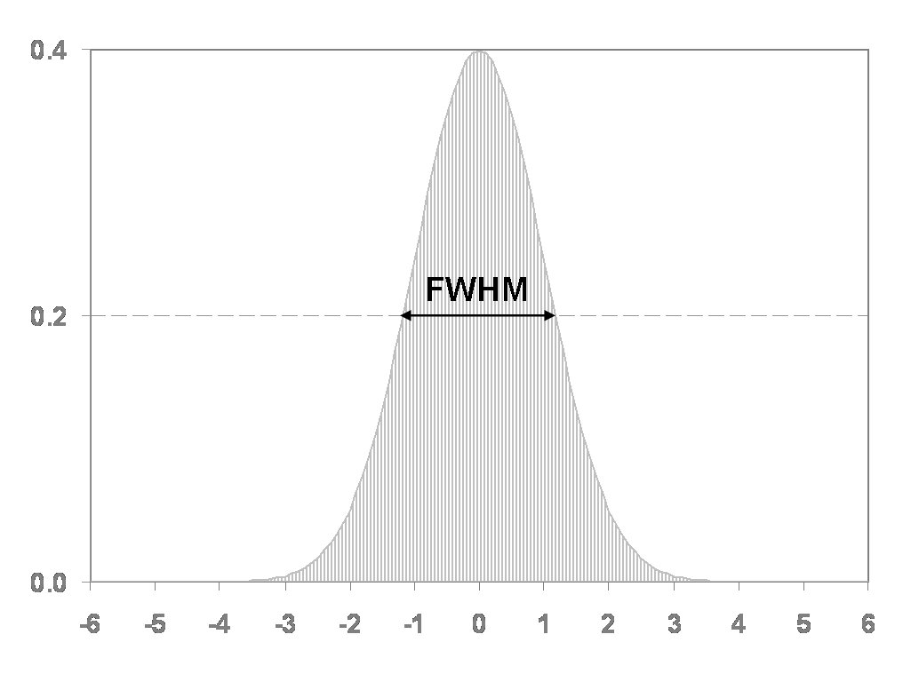
There is no standard value for smoothing fMRI data, FWHM usually
varies from 2mm to 8mm. A good compromise is to use a FWHM of 4. This
can be applied with fslmaths :
BASH
fslmaths func/MNI_mc_sub-OAS30015_task-rest_run-01_bold.nii.gz -s 4 func/sMNI_mc_sub-OAS30015_task-rest_run-01_bold.nii.gzBy changing the “-s” option we can change the FWHM, increasing or
decreasing the smoothing. Try it out and check the results with
fsleyes!
Temporal Filtering
Rs-fMRI timeseries are also characterized by non-interesting low-frequency drift due to physiological (e.g. respiration) or physical (scanner-related) noise. For this reason, we usually apply an high-pass filter that eliminates signal variations due to low-frequency. To do so, a voxel timeseries can be represented in the frequency domain, and low frequency can be set to 0.
Resting state Networks and Noise Components
Once the data is processed we can try to run an independent component analysis (ICA) on the fMRI timeseries. ICA is usually performed for two reasons: 1. Identify resting state networks, i.e. groups of areas that covary (work) together. This step is often done at the group level. 2. Identify further sources of noise from the data, and further remove them (this is called denoising).
ICA can be run using the melodic command from FSL.
BASH
melodic -i func/hpsMNI_mc_sub-OAS30015_task-rest_run-01_bold.nii.gz -o func/ICA -m /usr/local/fsl/data/standard/MNI152_T1_2mm_brain_mask.nii.gzThe -m option specifies a mask that we want to run the
analysis in. In this case we use a standard brain mask provided by FSL
but you could also create your own mask using the structural
segmentation.
Melodic will create a directory called “ICA” in our func folder
Open the melodic_IC.nii.gz file in the output folder using
fsleyes, threshold the values to 3 (this value is commonly
used as a threshold for this task).
Now chose a nice colormap (usually red) and overlay this to a standard brain template (-> File -> Add Standard).
Can you recognize some of the canonical resting-state networks?
Do you see some components that you think might be linked to artefacts?
You can clean the original signal by writing them down and running:
BASH
fslregfilt -i func/sMNI_mc_sub-OAS30015_task-rest_run-01_bold.nii.gz -o func/denosised_sMNI_mc_sub-OAS30015_task-rest_run-01_bold.nii.gz -d func/ICA/melodic_mix -f " 1,2,3"with the -f option you can specify the components number
that you want to clean from the signal.
Conclusion
You should now be able to fully process one fMRI scan yourself! As you know, we usually work with a bunch of data and want to automatize the pre-processing for all the scans, so that we can run it in one go.
Also following the other sections of this course, try to put all these commands in a for loop and use variables to run commands on your files.
If you want to discover some type of analysis that you can do on the processed data, check out some of these websites:
- FSLnets for network analysis of fMRI scans
- Melodic ICA and Dual regression for resting-state network connectivity
- Graph Analysis of connectivity metrics with Brain COnnectivity Toolbox
Ciao!
Key Points
- fMRI measures small signal fluctations associated with oxyhaemoglobin in the blood resulting from brain activation
- Images can either be acquired during a task or with no task involved (resting state)
- Key preprocessing steps include: EPI distortion correction, brain masking, smoothing, and temporal fitering
- Network components extracted from techniques like Melodic can show key network components, but also potentially components that represent noise.
Content from Extra: Using the Command Line
Last updated on 2024-07-23 | Edit this page
Estimated time: 12 minutes
Overview
Questions
- What is the command line interface?
- Why is it helpful in neuroimaging analysis?
- What are some common commands that I need to know?
Objectives
- Discover how to interact with files and directories on the command line
- Identify benefits that the command line can provide in processing image data.
Introduction: Why use the command line?
In order to get started with neuroimaging analysis, it is really helpful to first understand how to interact with a computer on the command line called the shell. At first look, it’s pretty bare bones and minimalist. How can this simple way of interacting with a computer be so useful?

Nowadays, we usually interact with a computer using a Graphical User Interface or a GUI. These include programs like Word, Chrome, iTunes which allow you to interact using your mouse to press buttons, select options, move sliders, change values, etc. It provides a simple, intuitive way for us to access the essential functionality that we need from these programs. Some neuroimaging analysis software does comes with a GUI, like this one from the Statistical Parametric Mapping (SPM) toolbox, a popular MATLAB based package.

Benefits of the command line
While GUIs are often the best way to interact with your computer, using the command line for neuroimaging analysis is tremendously powerful for many reasons:
- Automation GUIs typically will wait until you tell them what to do. When you go home at night, it won’t do anything because it has no instructions! You can setup the command line to automate some tasks so that it works late in the night while you are sleeping.
- Scalability Working with a GUI often means a lot of mouse moves and clicks. For a small handful of imaging sessions, this is a fine way to work, but what if your research project has hundreds of datasets to process. It’s far more likely that an error could occur or a dataset is missed. While you go through the lessons in this workshop, count the number of mouse clicks it takes you to do a task and think about how that would scale to your project. When you run on the command line it has all of the information it needs, so no interaction is needed, saving a lot of your time.
- Control With GUIs, you have access to the functionality that the GUI provides you. However, hidden from the GUI may be more advanced options that you need for your research. For the sake of more software that is often more user-friendly for the majority of tasks you are looking to do, the GUI can sometimes be restritie. With the command line, you should have access to more, if not all, of the functionality that the software provides, and thus more control over how the task is run. It may take some investigation on your part, though.
- Interoperability You may find that you want to take results from one program and feed them into another and then another. With GUI’s this often means saving or exporting the results, then opening up the other program and importing them. The command line often allows you the means to piece these steps together in one set of instructions.
Getting started
In this section, we are going to go through some basic steps of
working with the command line. Make sure you are able to connect to your
working environment by following the directions in the Setup section of this website. As a reminder, you
should have a desktop on your virtual machine that looks something like
this:  Click on the
Click on the
Applications icon in the top left of the window, and you
should see a taskbar pop out on the left-hand side. One of the icons is
a black box with a white border. This icon will launch the
Terminal and give you access to the command line.
Navigating the file structure
The terminal should produce a window with a white background and
black text. This is the shell. We will enter some commands and see what
responses that the computer provdes.
-
The first thing we are going to do is figure out our present location in the file system of the computer. We do that using the command
pwdwhich stands for present working directory. Type it in the command line and see what the response is:OUTPUT
/home/as2-streaming-userThis directory is also known as your home directory
-
Next we are going to see what items are contained in this directory. To do that, simply type
lsand it should show you all the files.OUTPUT
Background.png data MyFiles testYou will notice that some of the entries are different colors. The colors indicate whether the entries are files or directories. They also can indicate if these files or directories have special properties.
-
If we want more information about these files and directories, then we can use the same command with a command line option
-lto tell the computer to list the files in a long formatOUTPUT
total 60 -rw-r--r-- 1 as2-streaming-user as2-streaming-user 57734 Jun 28 2023 Background.png drwxrwxrwx 8 as2-streaming-user as2-streaming-user 142 Jun 22 2023 data drwxr-xr-x 2 as2-streaming-user as2-streaming-user 46 Jul 8 22:31 MyFiles drwxr-xr-x 2 as2-streaming-user as2-streaming-user 6 Jun 16 2023 testThis now gives a lot more information, with the letters before the file telling us about who owns the file (3rd and 4th column), what permissions they have to read, write or run (execute) the file (first column),and when it was modified (6th column).
If you want to list the contents of a different directory, just put it after the
ls -lOUTPUT
total 8 drwxr-xr-x 6 as2-streaming-user as2-streaming-user 84 Jun 16 2023 DiffusionMRI drwxr-xr-x 2 as2-streaming-user as2-streaming-user 4096 Jul 4 2023 ExtraStructuralMRI drwxr-xr-x 3 as2-streaming-user as2-streaming-user 26 Jun 27 2023 FunctionalMRI drwxr-xr-x 2 as2-streaming-user as2-streaming-user 4096 Jun 16 2023 ImageDataVisualization drwxr-xr-x 5 as2-streaming-user as2-streaming-user 77 Jul 7 2023 PETImaging drwxr-xr-x 2 as2-streaming-user as2-streaming-user 120 Jun 27 2023 StructuralMRI -
The
datadirectory is a sub-directory within your home directory where you will be storing your work. So let us move into that directory using thecdor change directory command:cd dataNow type the command
pwdagain. Has the result changed?What happens when we list the contents of this directory?
You should get the same result as when you ran
ls -l datafrom your home directory. -
Inside the data directory, let’s create a new directory that we will call
mywork. We do that using a command calledmkdir,
Absolute versus Relative Paths
Locations in the file system, whether they are files or directories,
are known as paths. Paths can be referred to in absolute terms
(like a postal address or latitude and longitude) or relative
terms (like directions to your work from home). In some cases it is more
convenient to use absolute paths, and in others, relative paths are
nicer. Absolute paths always begin with a / character. From
your home directory, the following two commands do the exact same
thing.
OUTPUT
DiffusionMRI FunctionalMRI mywork StructuralMRI
ExtraStructuralMRI ImageDataVisualization PETImagingBASH
# Using a relative path - this will only work if you are in the
# directory where data is located
ls dataOUTPUT
DiffusionMRI FunctionalMRI mywork StructuralMRI
ExtraStructuralMRI ImageDataVisualization PETImagingHelpful hints
-
Feeling lost? You can always get back to your home directory simply by typing
cdwithout any arguments or by using the tilde symbol, which is the shortcut for home. -
Help me! If you want to know more about a command, just type
manin front of it to get the manual entry. Previous commands If you want to see a list of commands that you have run, you can type in the
historycommand. You can also scroll through previous commands by tapping the up and down arrow keys and then hit Return when you found the command you want to run again.
Processing files
In this section, we will go over how to copy and view the contents of the files. There is some helpful information about one of the images in our Structural MRI lesson that we want to look at in more detail.
-
Let’s copy it over from the directory it is currently located into our new
myworkdirectory. We do this using thecpor copy command. We first specify the source, or the file/directory that we want to copy (data/StructuralMRI/sub-OAS30003_T1w.json), and then we specify the destination path where we want to make the copy (data/mywork). Before we do this command, let’s make sure we are back in the home directory first -
Now let us confirm that the copy of the file is where we expect it to be:
OUTPUT
sub-OAS30003_T1w.json -
Finally, let’s look at the contents of the file. We can do that with the command
catwhich concatenates and prints files.
Using cat on a large text file can end up looking
impressive as text swarms all over your terminal, but it can be hard to
examine the file…
OUTPUT
{
"Modality": "MR",
"MagneticFieldStrength": 3,
"Manufacturer": "Siemens",
"ManufacturersModelName": "Biograph_mMR",
"DeviceSerialNumber": "51010",
"PatientPosition": "HFS",
"SoftwareVersions": "syngo_MR_B18P",
"MRAcquisitionType": "3D",
"SeriesDescription": "MPRAGE_GRAPPA2",
"ScanningSequence": "GR_IR",
"SequenceVariant": "SP_MP",
"ScanOptions": "IR",
"SequenceName": "_tfl3d1_ns",
"ImageType": [
"ORIGINAL",
"PRIMARY",
"M",
"ND",
"NORM"
],
"AcquisitionTime": "11:53:18.945000",
"AcquisitionNumber": 1,
"SliceThickness": 1.2,
"SAR": 0.0397884,
"EchoTime": 0.00295,
"RepetitionTime": 2.3,
"InversionTime": 0.9,
"FlipAngle": 9,
"PartialFourier": 1,
"BaseResolution": 256,
"ShimSetting": [
-6853,
14225,
-5859,
-89,
-201,
157,
585,
-236
],
"TxRefAmp": 307.072,
"PhaseResolution": 1,
"ReceiveCoilName": "HeadNeck_MRPET",
"PulseSequenceDetails": "%SiemensSeq%_tfl",
"PercentPhaseFOV": 93.75,
"PhaseEncodingSteps": 239,
"AcquisitionMatrixPE": 240,
"ReconMatrixPE": 256,
"ParallelReductionFactorInPlane": 2,
"PixelBandwidth": 238,
"DwellTime": 8.2e-06,
"ImageOrientationPatientDICOM": [
0,
1,
0,
0,
0,
-1
],
"InPlanePhaseEncodingDirectionDICOM": "ROW",
"ConversionSoftware": "dcm2niix",
"ConversionSoftwareVersion": "v1.0.20171017 GCC4.4.7"If we want to have a bit more control over how we view larger files,
then we can use either the more or less
command. This allows you to scroll through the file a line or page at a
time, go back, search the text, etc.
-
We no longer need that file anymore (remember it is just a copy), so we can remove files by using the
rmcommand, but BE CAREFUL and check the command twice before executing the command, as this cannot be undone! Watch out for any spaces or any special characters like the*and?as they mean something special in the shell, and including them in a remove command may remove more files than you intended.
Further reading
If you want to find out more how to use the command line, please check out the following helpful resources:
Stretch exercises
As you get more comfortable, you can start to do powerful things with the command line.
Variables
Sometimes we want to store some information for future use. We can do
that with a variable. A variable has a name and a value. A variable in
the shell can hold a number, a single character, a word, sentence or a
list of things. You assign a value to a variable with a simple
statement var=value where you replace var with the name
that you want to call the variable and replace value with the value you
want to store. Once the variable has been assigned, you can access the
value within the variable by putting a $ in front of the
variable name
OUTPUT
My favorite images are T1 scans.See how it replaces $image with T1. Let’s do it again
and assign a new value to image.
OUTPUT
My favorite images are DTI scans.Looping
Variables are really helpful when we want to set up a loop. Let’s say we have images from 100 different subjects who are in our study, and we want to make sure that we process each of the images in the exact same way. You could type the commands out 100 times, where in each set of commands, you change the name of the image files. As you could imagine, that would be really boring, and there is definitely more risk of an error being introduced. A loop is a solution to this and makes your command writing much simpler. It is simply an instruction to the shell that says run the same command a bunch of times.
OUTPUT
Hey David, I need help!
Hey Ludovica, I need help!
Hey Tobey, I need help!
Hey Alexa, I need help!
Hey Luigi, I need help!Here, the loop is setup with a for command, with the
format for (var) in (list) where (var) is the variable
name, and its value will change with each iteration of the loop and
(list) holds the list of entries that you want to loop over. The for
loop will determine how many entries are in the list. At each iteration,
it will place the next value of the list in to the variable (in our
example name) and execute the commands that are inside the
keywords do (start the loop) and done (end the
loop).
Redirection
Quite often, when you execute a command on the shell, it prints out
information on the screen that is useful to store for later. You can
store them in the file using redirection. The >
says redirects the output from the screen to another location, such as a
file, overwriting the current contents. The >> does
the same thing but it just appends the contents at the end. This loop
just prints the number and its square on the screen.
OUTPUT
1 1
2 4
3 9
4 16
5 25
6 36
7 49
8 64
9 81
10 100This loop does the same thing but saves it to a text file called
squares.txt
Now if we show the contents of squares.txt, we see it
has the same information.
OUTPUT
1 1
2 4
3 9
4 16
5 25
6 36
7 49
8 64
9 81
10 100Redirection can also be used for getting input using the
< character. This finds the line where 64 is the
answer.
OUTPUT
8 64Finally you can redirect output from one command into input of
another command using the pipe character, |. In this case
we are directing the output from the echo command from the
screen to the input of the calculator command bc.
OUTPUT
58564Command line cheatsheet
| Command | Name | Function | Example Usage |
|---|---|---|---|
| man | Manual | HELP! | man cd |
| pwd | Print working directory | Where am I? | pwd |
| mkdir | Make directory | Create a new directory | mkdir dir1 |
| cd | Change directory | Go to the following location | cd dir1 |
| ls | List | Shows what is inside a directory | ls dir1 |
| cp | Copy | Copies a source file to a new destination | cp src dest |
| mv | Move | Moves a source file to a new destination | mv source destination |
| rm | Remove | Deletes a file or a directory | rm dir1/bad_file |
| cat | Concatenate | Prints out the contents of a file | cat results.txt |
| more | more | Prints out the contents of a file. Better for large files to scroll | more results.txt |
| nano, emacs, gedit | Text editor | Programs that edit plain text files (no formatting) |
emacs dir1/inputs.txt
nano dir1/inputs.txt
|
Key Points
- The command line interface is a low-level way of interacting with your computer
- It provides more control, more reliability, and more scalability than manually interacting with a graphical user interface.
- Paths can be specified in two ways: an absolute path and a relative path. The absolute path remains the same regardless of the current location, where the relative path will change.
- Help can be found by typing the man command